Ortholog Divergence Report
Input: MATK.valid.longest.fa · N sequences: 564 · Aligned length: 3367 codons
Reference: Polypterus_senegalus
Quick risk overview
- LOW: 0
- INTERMEDIATE: 0
- HIGH: 158766


Composition & complexity per sequence
Saved as per_sequence_composition.csv. High low-complexity or repeat content can reduce BLAST sensitivity due to soft masking.
| id | GC | GC skew | CpG dens. | AA LCR frac | NT repeat frac | AA len | CDS len |
|---|---|---|---|---|---|---|---|
| Polypterus_senegalus | 0.46815 | 0.0981 | 0.01779 | 0.0 | 0.7763 | 450 | 1350 |
| Pan_troglodytes | 0.64173 | 0.03885 | 0.06697 | 0.04921 | 0.71982 | 508 | 1524 |
| Triplophysa_dalaica | 0.50521 | 0.10751 | 0.05287 | 0.02679 | 0.69196 | 448 | 1344 |
| Falco_biarmicus | 0.61404 | 0.05222 | 0.04782 | 0.02178 | 0.68966 | 551 | 1653 |
| Callorhinus_ursinus | 0.64389 | -0.00431 | 0.06392 | 0.09 | 0.71278 | 600 | 1800 |
| Vidua_macroura | 0.60147 | 0.05238 | 0.04326 | 0.02637 | 0.68791 | 455 | 1365 |
| Dicentrarchus_labrax | 0.51587 | 0.0993 | 0.0361 | 0.0 | 0.7316 | 462 | 1386 |
| Etheostoma_cragini | 0.49711 | 0.10305 | 0.03032 | 0.0 | 0.69986 | 462 | 1386 |
| Tachyglossus_aculeatus | 0.57404 | 0.03178 | 0.04143 | 0.0 | 0.71649 | 475 | 1425 |
| Canis_lupus_dingo | 0.65842 | 0.05428 | 0.07565 | 0.0268 | 0.74089 | 485 | 1455 |
| Otolemur_garnettii | 0.60815 | 0.04649 | 0.04013 | 0.02564 | 0.73702 | 507 | 1521 |
| Cricetulus_griseus | 0.58301 | 0.0852 | 0.03205 | 0.02549 | 0.7366 | 510 | 1530 |
| Nanorana_parkeri | 0.43797 | 0.08874 | 0.02169 | 0.06502 | 0.71076 | 446 | 1338 |
| Falco_rusticolus | 0.60119 | 0.05198 | 0.05138 | 0.02679 | 0.74479 | 448 | 1344 |
| Lagenorhynchus_obliquidens | 0.64375 | 0.02034 | 0.05677 | 0.02128 | 0.70758 | 611 | 1833 |
| Pseudopipra_pipra | 0.60759 | 0.06019 | 0.04856 | 0.02532 | 0.718 | 474 | 1422 |
| Equus_quagga | 0.68333 | 0.02251 | 0.08852 | 0.04808 | 0.73269 | 520 | 1560 |
| Nycticebus_coucang | 0.61538 | 0.05342 | 0.04474 | 0.02564 | 0.74622 | 507 | 1521 |
| Strigops_habroptila | 0.60626 | 0.05289 | 0.05 | 0.02685 | 0.76137 | 447 | 1341 |
| Nomascus_leucogenys | 0.6437 | 0.03772 | 0.06829 | 0.02559 | 0.70472 | 508 | 1524 |
| Mustela_putorius_furo | 0.65517 | 0.06089 | 0.07578 | 0.05071 | 0.75254 | 493 | 1479 |
| Passer_domesticus | 0.59927 | 0.05379 | 0.04399 | 0.02637 | 0.70549 | 455 | 1365 |
| Symphalangus_syndactylus | 0.63845 | 0.04008 | 0.06435 | 0.02559 | 0.70341 | 508 | 1524 |
| Harpia_harpyja | 0.60999 | 0.06357 | 0.05597 | 0.0 | 0.73005 | 447 | 1341 |
| Ictalurus_furcatus | 0.48083 | 0.03681 | 0.02878 | 0.0 | 0.72935 | 452 | 1356 |
| Carcharodon_carcharias | 0.45468 | 0.15651 | 0.03073 | 0.0 | 0.70262 | 445 | 1335 |
| Camelus_bactrianus | 0.64195 | 0.0451 | 0.06572 | 0.05297 | 0.76412 | 472 | 1416 |
| Tachysurus_vachellii | 0.45723 | 0.05484 | 0.02214 | 0.0 | 0.73304 | 452 | 1356 |
| Caretta_caretta | 0.5906 | 0.02273 | 0.05373 | 0.02685 | 0.73602 | 447 | 1341 |
| Tachysurus_fulvidraco | 0.45206 | 0.05057 | 0.02214 | 0.0 | 0.74336 | 452 | 1356 |
| Pipra_filicauda | 0.59496 | 0.0836 | 0.0459 | 0.02326 | 0.7009 | 516 | 1548 |
| Mustela_nigripes | 0.65636 | 0.05759 | 0.07634 | 0.05155 | 0.7512 | 485 | 1455 |
| Sarcophilus_harrisii | 0.55652 | 0.09702 | 0.02666 | 0.02592 | 0.72426 | 463 | 1389 |
| Mesoplodon_densirostris | 0.64878 | 0.06505 | 0.07087 | 0.0279 | 0.76037 | 466 | 1398 |
| Calidris_pugnax | 0.61223 | 0.05725 | 0.05597 | 0.02685 | 0.74124 | 447 | 1341 |
| Chamaea_fasciata | 0.59121 | 0.05328 | 0.03886 | 0.02637 | 0.70842 | 455 | 1365 |
| Microtus_oregoni | 0.61942 | -0.00754 | 0.04675 | 0.0 | 0.73313 | 642 | 1926 |
| Hylobates_moloch | 0.64108 | 0.03992 | 0.06632 | 0.02559 | 0.69751 | 508 | 1524 |
| Molothrus_ater | 0.6022 | 0.05839 | 0.04399 | 0.02637 | 0.6967 | 455 | 1365 |
| Rissa_tridactyla | 0.62043 | 0.05529 | 0.06418 | 0.02685 | 0.74124 | 447 | 1341 |
| Pongo_pygmaeus | 0.64431 | 0.04286 | 0.06776 | 0.02564 | 0.7002 | 507 | 1521 |
| Bos_mutus | 0.6378 | 0.05603 | 0.0674 | 0.0268 | 0.73471 | 485 | 1455 |
| Vombatus_ursinus | 0.56609 | 0.11675 | 0.02948 | 0.02586 | 0.74497 | 464 | 1392 |
| Eumetopias_jubatus | 0.64333 | -0.00345 | 0.06448 | 0.07 | 0.71611 | 600 | 1800 |
| Oreochromis_aureus | 0.50073 | 0.09012 | 0.03423 | 0.0 | 0.71252 | 458 | 1374 |
| Mus_pahari | 0.59442 | 0.08785 | 0.03722 | 0.0 | 0.79328 | 466 | 1398 |
| Castor_canadensis | 0.62589 | 0.07886 | 0.0544 | 0.0279 | 0.72031 | 466 | 1398 |
| Sebastes_umbrosus | 0.52237 | 0.10497 | 0.03682 | 0.0 | 0.76335 | 462 | 1386 |
| Alosa_sapidissima | 0.49185 | 0.14759 | 0.02372 | 0.0 | 0.65926 | 450 | 1350 |
| Condylura_cristata | 0.64013 | 0.06572 | 0.06477 | 0.02524 | 0.73592 | 515 | 1545 |
| Apodemus_sylvaticus | 0.59289 | 0.08444 | 0.04021 | 0.0 | 0.75362 | 506 | 1518 |
| Hemibagrus_wyckioides | 0.46041 | 0.04335 | 0.02597 | 0.02395 | 0.73187 | 501 | 1503 |
| Equus_przewalskii | 0.67883 | 0.05163 | 0.09306 | 0.05365 | 0.76466 | 466 | 1398 |
| Epinephelus_moara | 0.52183 | 0.09623 | 0.03642 | 0.0 | 0.71616 | 458 | 1374 |
| Lagenorhynchus_albirostris | 0.64484 | 0.022 | 0.05895 | 0.02128 | 0.70649 | 611 | 1833 |
| Anarrhichthys_ocellatus | 0.51919 | 0.09468 | 0.03167 | 0.0 | 0.75286 | 495 | 1485 |
| Cyanistes_caeruleus | 0.58901 | 0.06468 | 0.03592 | 0.02637 | 0.70183 | 455 | 1365 |
| Chaetura_pelagica | 0.61223 | 0.06456 | 0.04403 | 0.0 | 0.71439 | 447 | 1341 |
| Ursus_arctos | 0.64944 | 0.07411 | 0.06659 | 0.08378 | 0.70945 | 561 | 1683 |
| Pangasianodon_hypophthalmus | 0.47935 | 0.04615 | 0.0214 | 0.0 | 0.73156 | 452 | 1356 |
| Mastacembelus_armatus | 0.52742 | 0.08071 | 0.0426 | 0.0 | 0.77489 | 462 | 1386 |
| Mobula_hypostoma | 0.45936 | 0.15584 | 0.02985 | 0.0 | 0.68978 | 447 | 1341 |
| Chrysochloris_asiatica | 0.61933 | 0.04246 | 0.06579 | 0.02564 | 0.74096 | 507 | 1521 |
| Entelurus_aequoreus | 0.57089 | 0.01717 | 0.04981 | 0.0 | 0.72549 | 442 | 1326 |
| Panthera_leo | 0.6543 | 0.06933 | 0.07634 | 0.0268 | 0.73127 | 485 | 1455 |
| Brienomyrus_brachyistius | 0.5637 | 0.10118 | 0.05263 | 0.0 | 0.69185 | 450 | 1350 |
| Rhinolophus_ferrumequinum | 0.62232 | 0.06667 | 0.05512 | 0.0279 | 0.73605 | 466 | 1398 |
| Elephantulus_edwardii | 0.63354 | 0.06297 | 0.05954 | 0.03854 | 0.70318 | 493 | 1479 |
| Bombina_bombina | 0.45301 | 0.11507 | 0.01616 | 0.02643 | 0.68722 | 454 | 1362 |
| Melospiza_melodia_melodia | 0.60513 | 0.05569 | 0.04619 | 0.02637 | 0.69084 | 455 | 1365 |
| Kogia_breviceps | 0.65379 | 0.05689 | 0.07445 | 0.0279 | 0.7432 | 466 | 1398 |
| Ochotona_curzoniae | 0.66596 | 0.06908 | 0.08569 | 0.10403 | 0.72258 | 471 | 1413 |
| Syngnathus_typhle | 0.52333 | 0.07771 | 0.04336 | 0.024 | 0.704 | 500 | 1500 |
| Anguilla_rostrata | 0.54519 | 0.08424 | 0.04225 | 0.0 | 0.70593 | 450 | 1350 |
| Epinephelus_fuscoguttatus | 0.52475 | 0.09847 | 0.0386 | 0.0 | 0.72562 | 458 | 1374 |
| Cyprinus_carpio | 0.53453 | 0.04213 | 0.07062 | 0.05405 | 0.73423 | 444 | 1332 |
| Leopardus_geoffroyi | 0.64497 | 0.06422 | 0.07039 | 0.02564 | 0.7311 | 507 | 1521 |
| Mauremys_mutica | 0.5906 | 0.02525 | 0.04851 | 0.02685 | 0.75019 | 447 | 1341 |
| Tursiops_truncatus | 0.65479 | 0.03024 | 0.06869 | 0.02574 | 0.72805 | 505 | 1515 |
| Oryx_dammah | 0.64055 | 0.0515 | 0.06946 | 0.0268 | 0.73333 | 485 | 1455 |
| Panthera_onca | 0.65047 | 0.07054 | 0.07562 | 0.05263 | 0.73887 | 494 | 1482 |
| Athene_cunicularia | 0.61226 | 0.05737 | 0.0572 | 0.02479 | 0.7438 | 484 | 1452 |
| Paralichthys_olivaceus | 0.50542 | 0.1216 | 0.02822 | 0.04121 | 0.72451 | 461 | 1383 |
| Ailuropoda_melanoleuca | 0.64616 | 0.03582 | 0.06552 | 0.02579 | 0.7209 | 504 | 1512 |
| Hippocampus_zosterae | 0.52726 | 0.05236 | 0.04282 | 0.02484 | 0.71014 | 483 | 1449 |
| Lipotes_vexillifer | 0.6488 | 0.05085 | 0.07015 | 0.0268 | 0.73402 | 485 | 1455 |
| Colossoma_macropomum | 0.51418 | 0.0731 | 0.03762 | 0.0 | 0.76596 | 470 | 1410 |
| Xiphophorus_hellerii | 0.52505 | 0.07054 | 0.03852 | 0.0 | 0.75091 | 459 | 1377 |
| Lonchura_striata | 0.60366 | 0.04854 | 0.04619 | 0.02637 | 0.68132 | 455 | 1365 |
| Taeniopygia_guttata | 0.60806 | 0.04578 | 0.04985 | 0.02637 | 0.68498 | 455 | 1365 |
| Dama_dama | 0.62151 | 0.02868 | 0.05886 | 0.04635 | 0.70945 | 561 | 1683 |
| Poeciliopsis_prolifica | 0.5374 | 0.06757 | 0.04942 | 0.0 | 0.74437 | 459 | 1377 |
| Corvus_hawaiiensis | 0.5963 | 0.04172 | 0.04196 | 0.05544 | 0.69581 | 469 | 1407 |
| Phocoena_phocoena | 0.64948 | 0.05185 | 0.07015 | 0.0268 | 0.73608 | 485 | 1455 |
| Antechinus_flavipes | 0.5594 | 0.09138 | 0.0281 | 0.02592 | 0.73146 | 463 | 1389 |
| Neolamprologus_brichardi | 0.5041 | 0.085 | 0.03972 | 0.0 | 0.69313 | 529 | 1587 |
| Anguilla_anguilla | 0.54519 | 0.08424 | 0.04151 | 0.0 | 0.71037 | 450 | 1350 |
| Melopsittacus_undulatus | 0.59508 | 0.05514 | 0.0403 | 0.02685 | 0.76212 | 447 | 1341 |
| Thunnus_albacares | 0.50963 | 0.0814 | 0.03113 | 0.0 | 0.74593 | 450 | 1350 |
| Acinonyx_jubatus | 0.65086 | 0.05385 | 0.07428 | 0.0268 | 0.73883 | 485 | 1455 |
| Takifugu_rubripes | 0.51101 | 0.06686 | 0.02964 | 0.0 | 0.75171 | 439 | 1317 |
| Callithrix_jacchus | 0.6458 | 0.03047 | 0.06683 | 0.04651 | 0.71377 | 559 | 1677 |
| Pseudoliparis_swirei | 0.52561 | 0.09212 | 0.03441 | 0.0 | 0.73193 | 475 | 1425 |
| Pezoporus_wallicus | 0.60072 | 0.05669 | 0.04061 | 0.06739 | 0.77029 | 460 | 1380 |
| Neofelis_nebulosa | 0.64856 | 0.07342 | 0.07517 | 0.05231 | 0.73843 | 497 | 1491 |
| Dipodomys_merriami | 0.65308 | 0.06243 | 0.07301 | 0.0279 | 0.72961 | 466 | 1398 |
| Micropterus_salmoides | 0.50942 | 0.08677 | 0.02538 | 0.0 | 0.71087 | 460 | 1380 |
| Acanthochromis_polyacanthus | 0.53857 | 0.11622 | 0.0539 | 0.0 | 0.78166 | 458 | 1374 |
| Terrapene_triunguis | 0.59359 | 0.01508 | 0.05746 | 0.02685 | 0.75764 | 447 | 1341 |
| Maylandia_zebra | 0.50146 | 0.08853 | 0.0335 | 0.0 | 0.69651 | 458 | 1374 |
| Ammospiza_nelsoni | 0.6044 | 0.05697 | 0.04692 | 0.02637 | 0.7033 | 455 | 1365 |
| Ictidomys_tridecemlineatus | 0.66469 | 0.05242 | 0.07237 | 0.02564 | 0.76792 | 507 | 1521 |
| Lagopus_muta | 0.62864 | 0.06287 | 0.06418 | 0.05369 | 0.78225 | 447 | 1341 |
| Notothenia_coriiceps | 0.53406 | 0.06463 | 0.04636 | 0.0 | 0.75204 | 367 | 1101 |
| Monodon_monoceros | 0.64157 | 0.02551 | 0.05677 | 0.02128 | 0.70758 | 611 | 1833 |
| Numida_meleagris | 0.62938 | 0.06872 | 0.06716 | 0.02685 | 0.75913 | 447 | 1341 |
| Platichthys_flesus | 0.53896 | 0.08166 | 0.04188 | 0.0 | 0.74747 | 462 | 1386 |
| Myripristis_murdjan | 0.53132 | 0.09756 | 0.03314 | 0.0 | 0.75594 | 463 | 1389 |
| Pezoporus_occidentalis | 0.6003 | 0.07081 | 0.04179 | 0.02685 | 0.76585 | 447 | 1341 |
| Rousettus_aegyptiacus | 0.66538 | -0.02354 | 0.06679 | 0.14638 | 0.7301 | 1298 | 3894 |
| Haemorhous_mexicanus | 0.60282 | 0.04926 | 0.04086 | 0.02673 | 0.69265 | 449 | 1347 |
| Erinaceus_europaeus | 0.67739 | 0.01295 | 0.06972 | 0.15205 | 0.67982 | 684 | 2052 |
| Scomber_japonicus | 0.49888 | 0.11411 | 0.02699 | 0.0 | 0.72809 | 445 | 1335 |
| Bubalus_bubalis | 0.63849 | 0.0549 | 0.0674 | 0.0268 | 0.72921 | 485 | 1455 |
| Syngnathus_scovelli | 0.52556 | 0.0869 | 0.04707 | 0.02454 | 0.70552 | 489 | 1467 |
| Labeo_rohita | 0.50794 | 0.0462 | 0.06008 | 0.02484 | 0.72326 | 483 | 1449 |
| Oreochromis_niloticus | 0.50146 | 0.09144 | 0.03423 | 0.0 | 0.71252 | 458 | 1374 |
| Cottoperca_gobio | 0.55167 | 0.09235 | 0.05972 | 0.0 | 0.76419 | 458 | 1374 |
| Phyllostomus_hastatus | 0.60658 | 0.08726 | 0.05154 | 0.0279 | 0.7432 | 466 | 1398 |
| Phyllopteryx_taeniolatus | 0.51277 | 0.0816 | 0.03052 | 0.02553 | 0.74326 | 470 | 1410 |
| Patagioenas_fasciata | 0.61447 | 0.04612 | 0.05746 | 0.02685 | 0.73826 | 447 | 1341 |
| Limanda_limanda | 0.53319 | 0.08796 | 0.04043 | 0.0 | 0.77056 | 462 | 1386 |
| Doryrhamphus_excisus | 0.55095 | 0.03567 | 0.04734 | 0.0 | 0.76055 | 458 | 1374 |
| Manacus_vitellinus | 0.61252 | 0.05855 | 0.04996 | 0.02532 | 0.7166 | 474 | 1422 |
| Meleagris_gallopavo | 0.62325 | 0.04494 | 0.05886 | 0.09244 | 0.78992 | 476 | 1428 |
| Panthera_uncia | 0.65758 | 0.05622 | 0.07156 | 0.02364 | 0.71758 | 550 | 1650 |
| Nothobranchius_furzeri | 0.49962 | 0.08815 | 0.03267 | 0.0 | 0.70691 | 439 | 1317 |
| Pezoporus_flaviventris | 0.60145 | 0.05542 | 0.04133 | 0.06739 | 0.77029 | 460 | 1380 |
| Falco_peregrinus | 0.61645 | 0.05201 | 0.04782 | 0.02178 | 0.6951 | 551 | 1653 |
| Dryobates_pubescens | 0.60944 | 0.03052 | 0.04366 | 0.05579 | 0.75107 | 466 | 1398 |
| Neogale_vison | 0.64591 | 0.0555 | 0.07237 | 0.02453 | 0.74717 | 530 | 1590 |
| Mastomys_coucha | 0.5975 | 0.0849 | 0.03691 | 0.02569 | 0.75626 | 506 | 1518 |
| Pogoniulus_pusillus | 0.60477 | 0.04562 | 0.04104 | 0.02685 | 0.7226 | 447 | 1341 |
| Esox_lucius | 0.51185 | 0.05644 | 0.02965 | 0.0 | 0.74889 | 450 | 1350 |
| Gambusia_affinis | 0.52651 | 0.0731 | 0.03997 | 0.0 | 0.7451 | 459 | 1377 |
| Cyclopterus_lumpus | 0.51714 | 0.1086 | 0.03358 | 0.0 | 0.75492 | 457 | 1371 |
| Pteronotus_mesoamericanus | 0.60644 | 0.06928 | 0.04485 | 0.05462 | 0.72759 | 476 | 1428 |
| Clarias_gariepinus | 0.45796 | 0.0789 | 0.02435 | 0.0 | 0.69543 | 452 | 1356 |
| Pungitius_pungitius | 0.54793 | 0.05192 | 0.05198 | 0.02968 | 0.76129 | 539 | 1617 |
| Cololabis_saira | 0.50036 | 0.08489 | 0.03026 | 0.0 | 0.71202 | 463 | 1389 |
| Megalops_cyprinoides | 0.53852 | 0.08391 | 0.03188 | 0.0 | 0.71037 | 450 | 1350 |
| Ctenopharyngodon_idella | 0.52434 | 0.04571 | 0.05847 | 0.02697 | 0.73633 | 445 | 1335 |
| Cebus_imitator | 0.64826 | 0.03043 | 0.07039 | 0.02564 | 0.71006 | 507 | 1521 |
| Psammomys_obesus | 0.63647 | 0.02467 | 0.0574 | 0.02355 | 0.74275 | 552 | 1656 |
| Megalobrama_amblycephala | 0.52242 | 0.04721 | 0.05984 | 0.02691 | 0.73991 | 446 | 1338 |
| Notolabrus_celidotus | 0.50072 | 0.11527 | 0.02527 | 0.0 | 0.71429 | 462 | 1386 |
| Salvelinus_fontinalis | 0.53239 | 0.0621 | 0.03309 | 0.0 | 0.78745 | 494 | 1482 |
| Ceratotherium_simum_simum | 0.67525 | 0.04449 | 0.08876 | 0.0279 | 0.73247 | 466 | 1398 |
| Vulpes_vulpes | 0.65594 | 0.07088 | 0.07445 | 0.0279 | 0.75179 | 466 | 1398 |
| Nannospalax_galili | 0.59639 | 0.08418 | 0.04019 | 0.0261 | 0.73092 | 498 | 1494 |
| Osmerus_mordax | 0.56719 | 0.08901 | 0.04532 | 0.0 | 0.73942 | 449 | 1347 |
| Narcine_bancroftii | 0.44787 | 0.1082 | 0.02278 | 0.0 | 0.72687 | 454 | 1362 |
| Enhydra_lutris_kenyoni | 0.6495 | 0.06388 | 0.07301 | 0.0279 | 0.74177 | 466 | 1398 |
| Aythya_fuligula | 0.61596 | 0.05569 | 0.0597 | 0.02685 | 0.76435 | 447 | 1341 |
| Malaclemys_terrapin_pileata | 0.5921 | 0.01008 | 0.05746 | 0.02685 | 0.75615 | 447 | 1341 |
| Vulpes_lagopus | 0.65636 | 0.05759 | 0.07428 | 0.0268 | 0.74708 | 485 | 1455 |
| Aphelocoma_coerulescens | 0.59881 | 0.04359 | 0.04179 | 0.02685 | 0.68531 | 447 | 1341 |
| Panthera_tigris | 0.6543 | 0.06933 | 0.07634 | 0.0268 | 0.73127 | 485 | 1455 |
| Emys_orbicularis | 0.5921 | 0.01259 | 0.05672 | 0.02685 | 0.75764 | 447 | 1341 |
| Chanodichthys_erythropterus | 0.52541 | 0.04694 | 0.05834 | 0.02691 | 0.74589 | 446 | 1338 |
| Desmodus_rotundus | 0.61159 | 0.09708 | 0.05011 | 0.0279 | 0.75179 | 466 | 1398 |
| Microcaecilia_unicolor | 0.50631 | 0.05572 | 0.02897 | 0.03341 | 0.71938 | 449 | 1347 |
| Erpetoichthys_calabaricus | 0.46963 | 0.11672 | 0.01779 | 0.0 | 0.7763 | 450 | 1350 |
| Engraulis_encrasicolus | 0.49814 | 0.15052 | 0.03418 | 0.02895 | 0.71121 | 449 | 1347 |
| Cuculus_canorus | 0.5921 | 0.06801 | 0.04254 | 0.05369 | 0.75317 | 447 | 1341 |
| Pipistrellus_kuhlii | 0.65631 | 0.0572 | 0.06995 | 0.02524 | 0.6835 | 515 | 1545 |
| Acanthopagrus_latus | 0.53175 | 0.0796 | 0.04434 | 0.02381 | 0.71825 | 504 | 1512 |
| Sus_scrofa | 0.63299 | 0.05103 | 0.05502 | 0.0268 | 0.73471 | 485 | 1455 |
| Dasypus_novemcinctus | 0.69671 | 0.05133 | 0.10451 | 0.0 | 0.74535 | 466 | 1398 |
| Dromiciops_gliroides | 0.57112 | 0.09182 | 0.03163 | 0.02586 | 0.71121 | 464 | 1392 |
| Rattus_norvegicus | 0.59476 | 0.06215 | 0.03833 | 0.0504 | 0.77352 | 496 | 1488 |
| Morone_saxatilis | 0.51876 | 0.10431 | 0.03682 | 0.0 | 0.74315 | 462 | 1386 |
| Cyprinodon_variegatus | 0.49398 | 0.12321 | 0.0255 | 0.0 | 0.70913 | 471 | 1413 |
| Mauremys_reevesii | 0.59508 | 0.03008 | 0.05299 | 0.02685 | 0.75019 | 447 | 1341 |
| Vidua_chalybeata | 0.6 | 0.0525 | 0.04252 | 0.02637 | 0.68791 | 455 | 1365 |
| Gallus_gallus | 0.63087 | 0.06383 | 0.07164 | 0.02685 | 0.79642 | 447 | 1341 |
| Oryctolagus_cuniculus | 0.71623 | 0.05024 | 0.11345 | 0.09572 | 0.77936 | 491 | 1473 |
| Alligator_mississippiensis | 0.56749 | 0.03548 | 0.04403 | 0.0 | 0.75764 | 447 | 1341 |
| Boleophthalmus_pectinirostris | 0.47682 | 0.05864 | 0.01915 | 0.0 | 0.71155 | 453 | 1359 |
| Lampris_incognitus | 0.51916 | 0.09192 | 0.02315 | 0.02603 | 0.76573 | 461 | 1383 |
| Bison_bison_bison | 0.6127 | 0.01449 | 0.04716 | 0.05328 | 0.71243 | 488 | 1464 |
| Carassius_gibelio | 0.53462 | 0.03872 | 0.06071 | 0.0257 | 0.77373 | 467 | 1401 |
| Neopsephotus_bourkii | 0.60925 | 0.05508 | 0.04701 | 0.02685 | 0.7733 | 447 | 1341 |
| Suncus_etruscus | 0.65575 | 0.05387 | 0.07455 | 0.06551 | 0.70456 | 519 | 1557 |
| Pseudorca_crassidens | 0.64648 | 0.0211 | 0.0595 | 0.02128 | 0.70213 | 611 | 1833 |
| Rhinopithecus_bieti | 0.64234 | 0.04401 | 0.06711 | 0.02564 | 0.69888 | 507 | 1521 |
| Balaenoptera_ricei | 0.65017 | 0.0335 | 0.06605 | 0.02574 | 0.72541 | 505 | 1515 |
| Oxyura_jamaicensis | 0.6167 | 0.052 | 0.06194 | 0.02685 | 0.77405 | 447 | 1341 |
| Prinia_subflava | 0.58723 | 0.04678 | 0.03715 | 0.02673 | 0.70676 | 449 | 1347 |
| Misgurnus_anguillicaudatus | 0.47239 | 0.03608 | 0.04161 | 0.02454 | 0.69734 | 489 | 1467 |
| Mugil_cephalus | 0.51497 | 0.09735 | 0.03192 | 0.0 | 0.72786 | 512 | 1536 |
| Falco_cherrug | 0.61404 | 0.05025 | 0.04661 | 0.02178 | 0.68603 | 551 | 1653 |
| Camarhynchus_parvulus | 0.60728 | 0.05868 | 0.04606 | 0.02673 | 0.70007 | 449 | 1347 |
| Girardinichthys_multiradiatus | 0.50109 | 0.11014 | 0.02907 | 0.0 | 0.73057 | 459 | 1377 |
| Melospiza_georgiana | 0.60513 | 0.05327 | 0.04545 | 0.02637 | 0.69451 | 455 | 1365 |
| Archocentrus_centrarchus | 0.4869 | 0.12407 | 0.02258 | 0.0 | 0.72125 | 458 | 1374 |
| Microcebus_murinus | 0.67906 | 0.02402 | 0.08812 | 0.02544 | 0.73581 | 511 | 1533 |
| Melozone_crissalis | 0.60659 | 0.06522 | 0.04985 | 0.02637 | 0.70037 | 455 | 1365 |
| Hypanus_sabinus | 0.45638 | 0.14706 | 0.02761 | 0.03132 | 0.7047 | 447 | 1341 |
| Hyla_sarda | 0.42042 | 0.10357 | 0.01503 | 0.03153 | 0.75075 | 444 | 1332 |
| Sander_lucioperca | 0.50866 | 0.09504 | 0.03321 | 0.0 | 0.76046 | 462 | 1386 |
| Peromyscus_eremicus | 0.62664 | 0.03337 | 0.05499 | 0.0233 | 0.73417 | 558 | 1674 |
| Dermochelys_coriacea | 0.57942 | 0.0399 | 0.04254 | 0.02685 | 0.739 | 447 | 1341 |
| Odocoileus_virginianus | 0.63024 | 0.06434 | 0.0619 | 0.0268 | 0.73402 | 485 | 1455 |
| Sapajus_apella | 0.65447 | 0.01615 | 0.06385 | 0.01585 | 0.72967 | 820 | 2460 |
| Cavia_porcellus | 0.68526 | 0.06472 | 0.09162 | 0.0279 | 0.73963 | 466 | 1398 |
| Eleginops_maclovinus | 0.56405 | 0.1071 | 0.05025 | 0.0262 | 0.76274 | 458 | 1374 |
| Perognathus_longimembris_pacificus | 0.63953 | 0.03838 | 0.05947 | 0.02519 | 0.75065 | 516 | 1548 |
| Bufo_bufo | 0.42627 | 0.12793 | 0.01307 | 0.07143 | 0.7235 | 434 | 1302 |
| Gasterosteus_aculeatus | 0.53667 | 0.07172 | 0.04506 | 0.0 | 0.75091 | 459 | 1377 |
| Cygnus_olor | 0.60976 | 0.05212 | 0.05695 | 0.02661 | 0.76792 | 451 | 1353 |
| Nipponia_nippon | 0.61969 | 0.05415 | 0.06418 | 0.02685 | 0.74124 | 447 | 1341 |
| Osmerus_eperlanus | 0.56644 | 0.08781 | 0.04383 | 0.0 | 0.73942 | 449 | 1347 |
| Scyliorhinus_canicula | 0.4698 | 0.15238 | 0.03507 | 0.02685 | 0.71216 | 447 | 1341 |
| Oncorhynchus_gorbuscha | 0.53348 | 0.06613 | 0.03098 | 0.0 | 0.7689 | 463 | 1389 |
| Gracilinanus_agilis | 0.57595 | 0.1025 | 0.03602 | 0.02592 | 0.75594 | 463 | 1389 |
| Poecilia_latipinna | 0.53813 | 0.06073 | 0.04578 | 0.0 | 0.76253 | 459 | 1377 |
| Passer_montanus | 0.59853 | 0.05263 | 0.04252 | 0.02637 | 0.70256 | 455 | 1365 |
| Struthio_camelus | 0.57122 | 0.07833 | 0.03881 | 0.02685 | 0.74944 | 447 | 1341 |
| Pseudopodoces_humilis | 0.59169 | 0.05646 | 0.03863 | 0.02673 | 0.70082 | 449 | 1347 |
| Myotis_myotis | 0.62069 | 0.07407 | 0.05277 | 0.05071 | 0.74037 | 493 | 1479 |
| Salmo_trutta | 0.53941 | 0.06971 | 0.03401 | 0.0 | 0.7773 | 461 | 1383 |
| Pseudochaenichthys_georgianus | 0.55288 | 0.09499 | 0.04745 | 0.02626 | 0.74763 | 457 | 1371 |
| Pleurodeles_waltl | 0.54288 | 0.08791 | 0.04701 | 0.02685 | 0.73229 | 447 | 1341 |
| Pteropus_alecto | 0.64306 | 0.05006 | 0.07015 | 0.0279 | 0.74392 | 466 | 1398 |
| Caloenas_nicobarica | 0.60477 | 0.04809 | 0.04851 | 0.02685 | 0.75019 | 447 | 1341 |
| Miniopterus_natalensis | 0.59514 | 0.08894 | 0.03865 | 0.0279 | 0.72175 | 466 | 1398 |
| Pygocentrus_nattereri | 0.51631 | 0.06044 | 0.0362 | 0.0 | 0.78723 | 470 | 1410 |
| Piliocolobus_tephrosceles | 0.64154 | 0.02698 | 0.06089 | 0.02178 | 0.67951 | 597 | 1791 |
| Tyto_alba | 0.60999 | 0.06357 | 0.05597 | 0.02685 | 0.73751 | 447 | 1341 |
| Plectropomus_leopardus | 0.52381 | 0.09917 | 0.0361 | 0.0 | 0.75685 | 462 | 1386 |
| Papio_anubis | 0.65031 | 0.04403 | 0.07263 | 0.01994 | 0.69172 | 652 | 1956 |
| Lepidothrix_coronata | 0.61463 | 0.0595 | 0.05208 | 0.02532 | 0.71238 | 474 | 1422 |
| Macaca_fascicularis | 0.64239 | 0.03984 | 0.06763 | 0.05315 | 0.70735 | 508 | 1524 |
| Neoarius_graeffei | 0.4646 | 0.07937 | 0.02066 | 0.03319 | 0.71608 | 452 | 1356 |
| Anoplopoma_fimbria | 0.51349 | 0.08807 | 0.02993 | 0.0 | 0.74179 | 457 | 1371 |
| Mesocricetus_auratus | 0.61483 | 0.07791 | 0.05056 | 0.02559 | 0.76772 | 508 | 1524 |
| Rattus_rattus | 0.59243 | 0.08193 | 0.04071 | 0.02784 | 0.77231 | 467 | 1401 |
| Seriola_dumerili | 0.50577 | 0.10414 | 0.02671 | 0.0 | 0.74892 | 462 | 1386 |
| Moschus_berezovskii | 0.63574 | 0.06811 | 0.06465 | 0.0268 | 0.72646 | 485 | 1455 |
| Toxotes_jaculatrix | 0.49856 | 0.10854 | 0.02744 | 0.0 | 0.72078 | 462 | 1386 |
| Puma_yagouaroundi | 0.66415 | 0.02846 | 0.07692 | 0.09263 | 0.71267 | 529 | 1587 |
| Perca_flavescens | 0.50837 | 0.08642 | 0.02931 | 0.0272 | 0.72106 | 478 | 1434 |
| Aquila_chrysaetos_chrysaetos | 0.62118 | 0.04682 | 0.06642 | 0.0 | 0.72707 | 447 | 1341 |
| Hyaena_hyaena | 0.6543 | 0.05252 | 0.07634 | 0.03505 | 0.7567 | 485 | 1455 |
| Saccopteryx_bilineata | 0.61216 | 0.06621 | 0.04336 | 0.02725 | 0.72397 | 477 | 1431 |
| Solea_solea | 0.49292 | 0.09228 | 0.02537 | 0.0 | 0.77778 | 447 | 1341 |
| Corapipo_altera | 0.61322 | 0.06422 | 0.04996 | 0.02532 | 0.72996 | 474 | 1422 |
| Vicugna_pacos | 0.65259 | 0.02745 | 0.06274 | 0.05566 | 0.71721 | 521 | 1563 |
| Camelus_dromedarius | 0.63983 | 0.04636 | 0.06431 | 0.05297 | 0.76907 | 472 | 1416 |
| Manis_pentadactyla | 0.633 | 0.06986 | 0.04822 | 0.0495 | 0.72013 | 505 | 1515 |
| Bos_indicus_x_Bos_taurus | 0.63574 | 0.0573 | 0.06534 | 0.0268 | 0.73471 | 485 | 1455 |
| Delphinus_delphis | 0.65093 | 0.06154 | 0.0723 | 0.0279 | 0.75036 | 466 | 1398 |
| Homo_sapiens | 0.64108 | 0.03378 | 0.06697 | 0.06102 | 0.71457 | 508 | 1524 |
| Oryzias_melastigma | 0.52967 | 0.08714 | 0.03886 | 0.0 | 0.72674 | 455 | 1365 |
| Octodon_degus | 0.64735 | 0.09613 | 0.07516 | 0.0279 | 0.71817 | 466 | 1398 |
| Poecile_atricapillus | 0.58476 | 0.05725 | 0.03635 | 0.02564 | 0.68946 | 468 | 1404 |
| Scleropages_formosus | 0.55141 | 0.05882 | 0.05456 | 0.0 | 0.77709 | 483 | 1449 |
| Sturnus_vulgaris | 0.59812 | 0.03739 | 0.03971 | 0.02597 | 0.7013 | 462 | 1386 |
| Corvus_kubaryi | 0.59773 | 0.04162 | 0.04196 | 0.05544 | 0.6887 | 469 | 1407 |
| Anas_platyrhynchos | 0.62043 | 0.05529 | 0.06418 | 0.02685 | 0.75988 | 447 | 1341 |
| Sinocyclocheilus_rhinocerous | 0.55134 | 0.06343 | 0.07372 | 0.08259 | 0.76339 | 448 | 1344 |
| Jaculus_jaculus | 0.63051 | 0.03441 | 0.05658 | 0.02564 | 0.76266 | 507 | 1521 |
| Dunckerocampus_dactyliophorus | 0.54071 | 0.03218 | 0.04318 | 0.0 | 0.72443 | 479 | 1437 |
| Electrophorus_electricus | 0.51037 | 0.07983 | 0.03336 | 0.0 | 0.78074 | 450 | 1350 |
| Sparus_aurata | 0.5267 | 0.12329 | 0.0361 | 0.0 | 0.72872 | 462 | 1386 |
| Sciurus_carolinensis | 0.66146 | 0.04112 | 0.0718 | 0.02257 | 0.75289 | 576 | 1728 |
| Melanotaenia_boesemani | 0.47899 | 0.14977 | 0.01885 | 0.0 | 0.71667 | 460 | 1380 |
| Myotis_lucifugus | 0.6335 | 0.01047 | 0.06146 | 0.12438 | 0.69154 | 201 | 603 |
| Accipiter_gentilis | 0.60701 | 0.06634 | 0.05299 | 0.0 | 0.73378 | 447 | 1341 |
| Lepus_europaeus | 0.69821 | 0.0616 | 0.10187 | 0.05376 | 0.76344 | 465 | 1395 |
| Lynx_canadensis | 0.65093 | 0.08352 | 0.0723 | 0.0279 | 0.7289 | 466 | 1398 |
| Parambassis_ranga | 0.5 | 0.13934 | 0.02119 | 0.0 | 0.78415 | 488 | 1464 |
| Gymnodraco_acuticeps | 0.54778 | 0.10253 | 0.04599 | 0.02626 | 0.75857 | 457 | 1371 |
| Phasianus_colchicus | 0.61298 | 0.06813 | 0.05448 | 0.05369 | 0.79642 | 447 | 1341 |
| Monopterus_albus | 0.50254 | 0.12717 | 0.02762 | 0.0 | 0.748 | 459 | 1377 |
| Odobenus_rosmarus_divergens | 0.6418 | 0.05759 | 0.06927 | 0.02621 | 0.73589 | 496 | 1488 |
| Alosa_alosa | 0.49407 | 0.14543 | 0.02446 | 0.0 | 0.65926 | 450 | 1350 |
| Xenopus_tropicalis | 0.43943 | 0.10274 | 0.01205 | 0.02709 | 0.66441 | 443 | 1329 |
| Coturnix_japonica | 0.6147 | 0.07005 | 0.05572 | 0.05791 | 0.79139 | 449 | 1347 |
| Calypte_anna | 0.57196 | 0.08996 | 0.02612 | 0.02685 | 0.7569 | 447 | 1341 |
| Onychostruthus_taczanowskii | 0.60776 | 0.05521 | 0.04925 | 0.02685 | 0.695 | 447 | 1341 |
| Cervus_canadensis | 0.63193 | 0.05074 | 0.06417 | 0.02605 | 0.72545 | 499 | 1497 |
| Mirounga_angustirostris | 0.64791 | 0.00467 | 0.0684 | 0.08893 | 0.71385 | 551 | 1653 |
| Sphaeramia_orbicularis | 0.49203 | 0.04271 | 0.02973 | 0.02609 | 0.72464 | 460 | 1380 |
| Ammospiza_caudacuta | 0.6044 | 0.05939 | 0.04765 | 0.02637 | 0.7033 | 455 | 1365 |
| Molossus_molossus | 0.59871 | 0.07766 | 0.04438 | 0.0279 | 0.72246 | 466 | 1398 |
| Camelus_ferus | 0.64092 | 0.05357 | 0.06586 | 0.05365 | 0.76681 | 466 | 1398 |
| Delphinapterus_leucas | 0.64212 | 0.03676 | 0.05243 | 0.05241 | 0.69405 | 706 | 2118 |
| Hippopotamus_amphibius_kiboko | 0.66077 | 0.05847 | 0.07339 | 0.02554 | 0.72102 | 509 | 1527 |
| Amblyraja_radiata | 0.50037 | 0.09687 | 0.03582 | 0.02685 | 0.70917 | 447 | 1341 |
| Sinocyclocheilus_grahami | 0.55 | 0.09596 | 0.06954 | 0.05 | 0.73333 | 240 | 720 |
| Protopterus_annectens | 0.43699 | 0.12969 | 0.01866 | 0.0 | 0.71738 | 447 | 1341 |
| Heterodontus_francisci | 0.46057 | 0.15994 | 0.02681 | 0.0 | 0.71949 | 448 | 1344 |
| Larimichthys_crocea | 0.50261 | 0.10386 | 0.02985 | 0.0 | 0.7226 | 447 | 1341 |
| Balaenoptera_acutorostrata | 0.64521 | 0.05987 | 0.07015 | 0.0279 | 0.74249 | 466 | 1398 |
| Pelodiscus_sinensis | 0.58986 | 0.05942 | 0.04627 | 0.05369 | 0.74795 | 447 | 1341 |
| Phacochoerus_africanus | 0.63368 | 0.04989 | 0.0564 | 0.0268 | 0.74845 | 485 | 1455 |
| Mus_musculus | 0.60013 | 0.0955 | 0.03955 | 0.02569 | 0.78986 | 506 | 1518 |
| Gopherus_flavomarginatus | 0.58105 | 0.05314 | 0.04565 | 0.09474 | 0.74667 | 475 | 1425 |
| Pelmatolapia_mariae | 0.50073 | 0.09302 | 0.03277 | 0.0 | 0.70597 | 458 | 1374 |
| Myodes_glareolus | 0.61331 | 0.05478 | 0.04944 | 0.0 | 0.71805 | 506 | 1518 |
| Simochromis_diagramma | 0.50364 | 0.08671 | 0.03496 | 0.0 | 0.70378 | 458 | 1374 |
| Aotus_nancymaae | 0.65026 | 0.04339 | 0.07288 | 0.04921 | 0.7021 | 508 | 1524 |
| Orycteropus_afer_afer | 0.64168 | 0.04303 | 0.06645 | 0.02564 | 0.74819 | 507 | 1521 |
| Oryzias_latipes | 0.55165 | 0.09429 | 0.04839 | 0.0 | 0.71795 | 455 | 1365 |
| Myotis_yumanensis | 0.61942 | 0.0678 | 0.05056 | 0.07677 | 0.72703 | 508 | 1524 |
| Prionailurus_bengalensis | 0.65155 | 0.0654 | 0.07221 | 0.0268 | 0.74433 | 485 | 1455 |
| Haliaeetus_leucocephalus | 0.60403 | 0.07654 | 0.05149 | 0.0 | 0.739 | 447 | 1341 |
| Columba_livia | 0.60328 | 0.06057 | 0.04925 | 0.02685 | 0.75466 | 447 | 1341 |
| Stegastes_partitus | 0.57826 | 0.06266 | 0.06381 | 0.0 | 0.76957 | 460 | 1380 |
| Embiotoca_jacksoni | 0.51361 | 0.12034 | 0.03387 | 0.0287 | 0.72259 | 453 | 1359 |
| Etheostoma_spectabile | 0.49964 | 0.09884 | 0.03125 | 0.0 | 0.71678 | 459 | 1377 |
| Chinchilla_lanigera | 0.67525 | 0.08263 | 0.08948 | 0.0279 | 0.73462 | 466 | 1398 |
| Ochotona_princeps | 0.66596 | 0.06482 | 0.08215 | 0.10403 | 0.74805 | 471 | 1413 |
| Zalophus_californianus | 0.64592 | 0.06977 | 0.0723 | 0.0279 | 0.73891 | 466 | 1398 |
| Dromaius_novaehollandiae | 0.5906 | 0.06061 | 0.04254 | 0.02685 | 0.74646 | 447 | 1341 |
| Phocoena_sinus | 0.64161 | 0.02207 | 0.05668 | 0.02124 | 0.71623 | 612 | 1836 |
| Anas_acuta | 0.61894 | 0.05542 | 0.06418 | 0.02685 | 0.75988 | 447 | 1341 |
| Lutra_lutra | 0.64773 | 0.05637 | 0.07104 | 0.02637 | 0.72617 | 493 | 1479 |
| Lynx_rufus | 0.65093 | 0.08132 | 0.07301 | 0.0279 | 0.72747 | 466 | 1398 |
| Periophthalmus_magnuspinnatus | 0.4805 | 0.0781 | 0.02577 | 0.0 | 0.71523 | 453 | 1359 |
| Rhinatrema_bivittatum | 0.55696 | 0.01212 | 0.04139 | 0.03038 | 0.70211 | 395 | 1185 |
| Egretta_garzetta | 0.62043 | 0.04087 | 0.06343 | 0.02685 | 0.73527 | 447 | 1341 |
| Puntigrus_tetrazona | 0.55725 | 0.05852 | 0.07542 | 0.05217 | 0.76087 | 460 | 1380 |
| Cynoglossus_semilaevis | 0.52371 | 0.05075 | 0.04313 | 0.03233 | 0.71695 | 464 | 1392 |
| Macaca_nemestrina | 0.64173 | 0.04294 | 0.06632 | 0.02559 | 0.69488 | 508 | 1524 |
| Pongo_abelii | 0.64366 | 0.04188 | 0.06711 | 0.02564 | 0.7002 | 507 | 1521 |
| Thunnus_thynnus | 0.50815 | 0.07872 | 0.02891 | 0.0 | 0.74519 | 450 | 1350 |
| Ursus_americanus | 0.64807 | 0.0596 | 0.07015 | 0.0279 | 0.72103 | 466 | 1398 |
| Anser_cygnoides | 0.61936 | 0.04057 | 0.06213 | 0.02661 | 0.76423 | 451 | 1353 |
| Perca_fluviatilis | 0.50938 | 0.09065 | 0.03032 | 0.0 | 0.7316 | 462 | 1386 |
| Sylvia_atricapilla | 0.58388 | 0.05646 | 0.03079 | 0.02637 | 0.68791 | 455 | 1365 |
| Salvelinus_namaycush | 0.53796 | 0.07796 | 0.03329 | 0.0 | 0.78597 | 461 | 1383 |
| Hemiscyllium_ocellatum | 0.45116 | 0.15041 | 0.02537 | 0.0 | 0.70619 | 447 | 1341 |
| Danio_rerio | 0.49363 | 0.0956 | 0.05322 | 0.08315 | 0.74757 | 445 | 1335 |
| Mandrillus_leucophaeus | 0.64274 | 0.01818 | 0.06904 | 0.0217 | 0.68503 | 599 | 1797 |
| Dipodomys_ordii | 0.65616 | 0.05492 | 0.07663 | 0.02928 | 0.71922 | 444 | 1332 |
| Eubalaena_glacialis | 0.65165 | 0.06257 | 0.0723 | 0.0279 | 0.75036 | 466 | 1398 |
| Colobus_angolensis_palliatus | 0.64168 | 0.04303 | 0.06579 | 0.02564 | 0.69494 | 507 | 1521 |
| Grammomys_surdaster | 0.58996 | 0.113 | 0.03587 | 0.0 | 0.73333 | 465 | 1395 |
| Bubalus_kerabau | 0.63805 | 0.07399 | 0.06872 | 0.0279 | 0.74177 | 466 | 1398 |
| Gavialis_gangeticus | 0.56972 | 0.0445 | 0.04627 | 0.0 | 0.76286 | 447 | 1341 |
| Channa_argus | 0.49673 | 0.11404 | 0.02326 | 0.0 | 0.74728 | 459 | 1377 |
| Scophthalmus_maximus | 0.52597 | 0.08093 | 0.03682 | 0.0 | 0.77706 | 462 | 1386 |
| Semicossyphus_pulcher | 0.5222 | 0.08934 | 0.03614 | 0.02709 | 0.72837 | 443 | 1329 |
| Capra_hircus | 0.63711 | 0.05717 | 0.06602 | 0.0268 | 0.75189 | 485 | 1455 |
| Saimiri_boliviensis | 0.64878 | 0.0239 | 0.06742 | 0.04472 | 0.71497 | 559 | 1677 |
| Leucoraja_erinaceus | 0.49963 | 0.09552 | 0.03731 | 0.02685 | 0.7211 | 447 | 1341 |
| Trachypithecus_francoisi | 0.64278 | 0.02506 | 0.06392 | 0.02167 | 0.68333 | 600 | 1800 |
| Arvicola_amphibius | 0.61397 | 0.06009 | 0.04812 | 0.0 | 0.73518 | 506 | 1518 |
| Chrysemys_picta_bellii | 0.59346 | 0.01796 | 0.0569 | 0.02559 | 0.7619 | 469 | 1407 |
| Trichomycterus_rosablanca | 0.51535 | 0.04113 | 0.04755 | 0.0 | 0.71491 | 456 | 1368 |
| Hippoglossus_hippoglossus | 0.52525 | 0.07967 | 0.0361 | 0.0 | 0.73232 | 462 | 1386 |
| Budorcas_taxicolor | 0.64752 | 0.07849 | 0.07266 | 0.02574 | 0.73135 | 505 | 1515 |
| Cervus_elaphus | 0.64055 | 0.05579 | 0.06671 | 0.0268 | 0.73127 | 485 | 1455 |
| Austrofundulus_limnaeus | 0.52796 | 0.09766 | 0.04288 | 0.0 | 0.70443 | 459 | 1377 |
| Theropithecus_gelada | 0.63911 | 0.03901 | 0.065 | 0.02559 | 0.70079 | 508 | 1524 |
| Charadrius_vociferus | 0.59955 | 0.04726 | 0.05 | 0.02685 | 0.74795 | 447 | 1341 |
| Poecilia_formosa | 0.53885 | 0.05391 | 0.04651 | 0.0 | 0.76543 | 459 | 1377 |
| Nyctibius_grandis | 0.62714 | 0.05589 | 0.06642 | 0.02685 | 0.73602 | 447 | 1341 |
| Clinocottus_analis | 0.52284 | 0.09778 | 0.03547 | 0.0 | 0.77301 | 489 | 1467 |
| Cercocebus_atys | 0.6347 | 0.00103 | 0.06201 | 0.07436 | 0.69211 | 511 | 1533 |
| Gavia_stellata | 0.61745 | 0.04589 | 0.06343 | 0.0 | 0.73229 | 447 | 1341 |
| Trichosurus_vulpecula | 0.56947 | 0.10493 | 0.0317 | 0.02592 | 0.7653 | 463 | 1389 |
| Paramormyrops_kingsleyae | 0.56222 | 0.0751 | 0.04967 | 0.0 | 0.71481 | 450 | 1350 |
| Pristis_pectinata | 0.44444 | 0.15101 | 0.02612 | 0.0 | 0.68084 | 447 | 1341 |
| Arvicanthis_niloticus | 0.60589 | 0.07549 | 0.04765 | 0.06955 | 0.73246 | 532 | 1596 |
| Muntiacus_reevesi | 0.63574 | 0.06378 | 0.06396 | 0.0268 | 0.73196 | 485 | 1455 |
| Neophocaena_asiaeorientalis_asiaeorientalis | 0.65017 | 0.05285 | 0.06946 | 0.0268 | 0.73883 | 485 | 1455 |
| Manacus_candei | 0.6155 | 0.05226 | 0.05267 | 0.02632 | 0.72222 | 456 | 1368 |
| Catharus_ustulatus | 0.59163 | 0.06341 | 0.0361 | 0.02597 | 0.70491 | 462 | 1386 |
| Chanos_chanos | 0.51727 | 0.11756 | 0.04207 | 0.0 | 0.71697 | 444 | 1332 |
| Serinus_canaria | 0.60134 | 0.05432 | 0.04458 | 0.02673 | 0.68745 | 449 | 1347 |
| Centropristis_striata | 0.51747 | 0.09705 | 0.03423 | 0.0 | 0.72635 | 458 | 1374 |
| Sorex_araneus | 0.67399 | 0.03258 | 0.08788 | 0.02595 | 0.72588 | 501 | 1503 |
| Elephas_maximus_indicus | 0.65899 | 0.03963 | 0.06455 | 0.06912 | 0.71121 | 651 | 1953 |
| Corvus_cornix_cornix | 0.59773 | 0.03924 | 0.04196 | 0.05544 | 0.6887 | 469 | 1407 |
| Bos_javanicus | 0.6378 | 0.05388 | 0.0674 | 0.0268 | 0.73471 | 485 | 1455 |
| Takifugu_flavidus | 0.51177 | 0.06528 | 0.02964 | 0.0 | 0.75171 | 439 | 1317 |
| Nerophis_ophidion | 0.56184 | 0.03893 | 0.04453 | 0.02715 | 0.73152 | 442 | 1326 |
| Meles_meles | 0.66035 | 0.0457 | 0.07514 | 0.05263 | 0.74526 | 475 | 1425 |
| Ictalurus_punctatus | 0.47788 | 0.04012 | 0.02878 | 0.0 | 0.73083 | 452 | 1356 |
| Macaca_thibetana_thibetana | 0.64304 | 0.03878 | 0.06829 | 0.05315 | 0.70866 | 508 | 1524 |
| Sturnira_hondurensis | 0.60801 | 0.09412 | 0.04796 | 0.0279 | 0.74249 | 466 | 1398 |
| Mus_caroli | 0.60013 | 0.08672 | 0.04087 | 0.02569 | 0.77931 | 506 | 1518 |
| Cebidichthys_violaceus | 0.51443 | 0.12763 | 0.03032 | 0.0 | 0.73665 | 462 | 1386 |
| Suricata_suricatta | 0.65039 | 0.03904 | 0.07101 | 0.05469 | 0.73828 | 512 | 1536 |
| Leptonychotes_weddellii | 0.65205 | 0.06724 | 0.07521 | 0.02714 | 0.73347 | 479 | 1437 |
| Poecilia_mexicana | 0.5374 | 0.05676 | 0.04578 | 0.0 | 0.75744 | 459 | 1377 |
| Panthera_pardus | 0.64923 | 0.07438 | 0.07517 | 0.05231 | 0.73307 | 497 | 1491 |
| Pelobates_fuscus | 0.45871 | 0.0671 | 0.03005 | 0.0 | 0.69219 | 444 | 1332 |
| Brachyistius_frenatus | 0.51361 | 0.12034 | 0.03387 | 0.0 | 0.71965 | 453 | 1359 |
| Solea_senegalensis | 0.49366 | 0.10876 | 0.02313 | 0.0 | 0.78971 | 447 | 1341 |
| Lepisosteus_oculatus | 0.59719 | 0.04455 | 0.05843 | 0.0 | 0.76349 | 451 | 1353 |
| Pseudorasbora_parva | 0.55457 | 0.05489 | 0.06464 | 0.05345 | 0.79659 | 449 | 1347 |
| Scomber_scombrus | 0.50562 | 0.10222 | 0.03073 | 0.0 | 0.73034 | 445 | 1335 |
| Nyctereutes_procyonoides | 0.65236 | 0.07456 | 0.0723 | 0.0279 | 0.74106 | 466 | 1398 |
| Empidonax_traillii | 0.61463 | 0.06636 | 0.05489 | 0.02532 | 0.72855 | 474 | 1422 |
| Hirundo_rustica | 0.58377 | 0.06546 | 0.03706 | 0.06349 | 0.69665 | 567 | 1701 |
| Crocodylus_porosus | 0.57047 | 0.04052 | 0.04776 | 0.0 | 0.76585 | 447 | 1341 |
| Seriola_lalandi_dorsalis | 0.50577 | 0.10128 | 0.02671 | 0.0 | 0.75325 | 462 | 1386 |
| Ovis_canadensis | 0.63711 | 0.05933 | 0.06671 | 0.0268 | 0.73952 | 485 | 1455 |
| Hypomesus_transpacificus | 0.58055 | 0.07928 | 0.05052 | 0.0 | 0.74536 | 449 | 1347 |
| Orcinus_orca | 0.65413 | 0.02926 | 0.06869 | 0.02574 | 0.72805 | 505 | 1515 |
| Sardina_pilchardus | 0.50185 | 0.12813 | 0.02589 | 0.0 | 0.68219 | 451 | 1353 |
| Apteryx_mantelli | 0.58166 | 0.07179 | 0.04254 | 0.02685 | 0.75839 | 447 | 1341 |
| Tinamus_guttatus | 0.56674 | 0.07632 | 0.04328 | 0.02685 | 0.7487 | 447 | 1341 |
| Conger_conger | 0.59323 | 0.07039 | 0.06412 | 0.06911 | 0.73722 | 463 | 1389 |
| Poecilia_reticulata | 0.53247 | 0.06233 | 0.04332 | 0.0 | 0.76263 | 462 | 1386 |
| Gorilla_gorilla_gorilla | 0.64173 | 0.03885 | 0.06697 | 0.04921 | 0.7185 | 508 | 1524 |
| Cyprinodon_tularosa | 0.49328 | 0.12769 | 0.02408 | 0.0 | 0.71904 | 471 | 1413 |
| Cariama_cristata | 0.61148 | 0.03902 | 0.05896 | 0.02685 | 0.71812 | 447 | 1341 |
| Chiroxiphia_lanceolata | 0.59109 | 0.08634 | 0.04072 | 0.02326 | 0.69961 | 516 | 1548 |
| Propithecus_coquereli | 0.66995 | 0.04024 | 0.08158 | 0.02564 | 0.71532 | 507 | 1521 |
| Trichechus_manatus_latirostris | 0.64702 | 0.03471 | 0.0611 | 0.05263 | 0.68842 | 475 | 1425 |
| Prionailurus_viverrinus | 0.65099 | 0.05131 | 0.07162 | 0.02658 | 0.73074 | 489 | 1467 |
| Chlorocebus_sabaeus | 0.64103 | 0.03795 | 0.06645 | 0.02564 | 0.69362 | 507 | 1521 |
| Phodopus_roborovskii | 0.59237 | 0.09212 | 0.03355 | 0.02564 | 0.72321 | 507 | 1521 |
| Astyanax_mexicanus | 0.49963 | 0.10457 | 0.03093 | 0.0 | 0.72038 | 453 | 1359 |
| Triplophysa_rosa | 0.5119 | 0.07267 | 0.05733 | 0.02679 | 0.70015 | 448 | 1344 |
| Myotis_daubentonii | 0.62624 | 0.06032 | 0.0557 | 0.0497 | 0.73161 | 503 | 1509 |
| Acomys_russatus | 0.61011 | 0.04931 | 0.04756 | 0.02347 | 0.75391 | 554 | 1662 |
| Cheilinus_undulatus | 0.51159 | 0.11898 | 0.02973 | 0.0 | 0.71449 | 460 | 1380 |
| Diceros_bicornis_minor | 0.67668 | 0.04651 | 0.09019 | 0.0279 | 0.74106 | 466 | 1398 |
| Choloepus_didactylus | 0.66081 | 0.03251 | 0.07752 | 0.02539 | 0.72786 | 512 | 1536 |
| Chelonia_mydas | 0.58837 | 0.02915 | 0.05149 | 0.02685 | 0.73304 | 447 | 1341 |
| Scatophagus_argus | 0.50908 | 0.10414 | 0.0327 | 0.0 | 0.74219 | 459 | 1377 |
| Pan_paniscus | 0.64239 | 0.03984 | 0.06763 | 0.04921 | 0.71982 | 508 | 1524 |
| Spea_bombifrons | 0.46396 | 0.11974 | 0.02029 | 0.0 | 0.75751 | 444 | 1332 |
| Anomalospiza_imberbis | 0.60147 | 0.05238 | 0.04326 | 0.02637 | 0.69158 | 455 | 1365 |
| Corvus_moneduloides | 0.59559 | 0.04296 | 0.04054 | 0.05544 | 0.69154 | 469 | 1407 |
| Callorhinchus_milii | 0.51988 | 0.10153 | 0.04486 | 0.03254 | 0.76356 | 461 | 1383 |
| Cygnus_atratus | 0.61123 | 0.04958 | 0.05769 | 0.02661 | 0.76349 | 451 | 1353 |
| Sinocyclocheilus_anshuiensis | 0.53228 | 0.04654 | 0.07062 | 0.05405 | 0.72372 | 444 | 1332 |
| Kryptolebias_marmoratus | 0.5374 | 0.07297 | 0.0516 | 0.0 | 0.74292 | 459 | 1377 |
| Mustela_erminea | 0.65377 | 0.05088 | 0.07337 | 0.02648 | 0.74813 | 491 | 1473 |
| Peromyscus_maniculatus_bairdii | 0.63761 | 0.03664 | 0.05758 | 0.02222 | 0.76068 | 585 | 1755 |
| Falco_naumanni | 0.5997 | 0.05707 | 0.04914 | 0.02679 | 0.74628 | 448 | 1344 |
| Geospiza_fortis | 0.60366 | 0.05825 | 0.04545 | 0.02637 | 0.6967 | 455 | 1365 |
| Echinops_telfairi | 0.64234 | 0.03378 | 0.06711 | 0.02564 | 0.72847 | 507 | 1521 |
| Lathamus_discolor | 0.59348 | 0.05006 | 0.03916 | 0.06957 | 0.76522 | 460 | 1380 |
| Anabas_testudineus | 0.52165 | 0.10097 | 0.03394 | 0.02814 | 0.72583 | 462 | 1386 |
| Myxocyprinus_asiaticus | 0.45523 | 0.06116 | 0.03238 | 0.02709 | 0.6614 | 443 | 1329 |
| Salarias_fasciatus | 0.50361 | 0.08596 | 0.03466 | 0.0 | 0.70851 | 462 | 1386 |
| Melanerpes_formicivorus | 0.60626 | 0.03567 | 0.04104 | 0.02685 | 0.74273 | 447 | 1341 |
| Mirounga_leonina | 0.643 | 0.0593 | 0.07039 | 0.02564 | 0.73307 | 507 | 1521 |
| Pteropus_vampyrus | 0.63948 | 0.05369 | 0.068 | 0.0279 | 0.74678 | 466 | 1398 |
| Hippocampus_comes | 0.5365 | 0.07317 | 0.04824 | 0.0 | 0.70799 | 484 | 1452 |
| Lemur_catta | 0.66013 | 0.03564 | 0.07587 | 0.02549 | 0.72222 | 510 | 1530 |
| Peromyscus_californicus_insignis | 0.62778 | 0.03009 | 0.05336 | 0.02167 | 0.73944 | 600 | 1800 |
| Halichoerus_grypus | 0.64599 | 0.05723 | 0.06959 | 0.02444 | 0.71742 | 532 | 1596 |
| Echeneis_naucrates | 0.53958 | 0.08479 | 0.03997 | 0.0 | 0.72331 | 459 | 1377 |
| Myotis_davidii | 0.61938 | 0.02235 | 0.04962 | 0.09343 | 0.71569 | 578 | 1734 |
| Amia_calva | 0.5817 | 0.02622 | 0.05523 | 0.02614 | 0.77052 | 459 | 1377 |
| Seriola_aureovittata | 0.50649 | 0.09972 | 0.02744 | 0.0 | 0.75325 | 462 | 1386 |
| Molothrus_aeneus | 0.6022 | 0.06083 | 0.04472 | 0.02637 | 0.6967 | 455 | 1365 |
| Petaurus_breviceps_papuanus | 0.56084 | 0.10141 | 0.0281 | 0.02592 | 0.76458 | 463 | 1389 |
| Pseudophryne_corroboree | 0.44572 | 0.09434 | 0.0176 | 0.08945 | 0.70031 | 436 | 1308 |
| Lates_calcarifer | 0.50649 | 0.09687 | 0.02744 | 0.02814 | 0.7316 | 462 | 1386 |
| Canis_lupus_familiaris | 0.67814 | 0.02821 | 0.06794 | 0.099 | 0.66236 | 697 | 2091 |
| Globicephala_melas | 0.64757 | 0.02106 | 0.06059 | 0.02128 | 0.70322 | 611 | 1833 |
| Heptranchias_perlo | 0.46507 | 0.1518 | 0.0335 | 0.0 | 0.73654 | 458 | 1374 |
| Micropterus_dolomieu | 0.50942 | 0.08393 | 0.02611 | 0.0 | 0.71667 | 460 | 1380 |
| Phaethon_lepturus | 0.60626 | 0.05781 | 0.05149 | 0.02685 | 0.72632 | 447 | 1341 |
| Xiphias_gladius | 0.50842 | 0.07781 | 0.03299 | 0.0 | 0.77143 | 455 | 1365 |
| Meriones_unguiculatus | 0.63243 | 0.02758 | 0.05753 | 0.02519 | 0.75129 | 516 | 1548 |
| Grus_americana | 0.6182 | 0.05187 | 0.05896 | 0.02685 | 0.73229 | 447 | 1341 |
| Hoplias_malabaricus | 0.45147 | 0.07 | 0.01732 | 0.0 | 0.68849 | 443 | 1329 |
| Pundamilia_nyererei | 0.50218 | 0.08696 | 0.0335 | 0.0 | 0.69942 | 458 | 1374 |
| Danio_aesculapii | 0.4794 | 0.10938 | 0.04498 | 0.08315 | 0.72584 | 445 | 1335 |
| Equus_caballus | 0.67954 | 0.05263 | 0.09377 | 0.05365 | 0.76466 | 466 | 1398 |
| Artibeus_jamaicensis | 0.60801 | 0.09176 | 0.05154 | 0.0279 | 0.73319 | 466 | 1398 |
| Marmota_marmota_marmota | 0.6785 | 0.04651 | 0.08103 | 0.11243 | 0.78501 | 169 | 507 |
| Fundulus_heteroclitus | 0.52869 | 0.10165 | 0.04433 | 0.0 | 0.7313 | 459 | 1377 |
| Pyrgilauda_ruficollis | 0.60328 | 0.05315 | 0.04701 | 0.02685 | 0.69948 | 447 | 1341 |
| Parus_major | 0.59094 | 0.05528 | 0.03715 | 0.02673 | 0.70082 | 449 | 1347 |
| Myiozetetes_cayanensis | 0.61603 | 0.06393 | 0.057 | 0.02532 | 0.72644 | 474 | 1422 |
| Nematolebias_whitei | 0.51271 | 0.08215 | 0.03997 | 0.0 | 0.69499 | 459 | 1377 |
| Chelonoidis_abingdonii | 0.57193 | 0.04785 | 0.03933 | 0.06526 | 0.73544 | 475 | 1425 |
| Cyrtonyx_montezumae | 0.61223 | 0.05481 | 0.05448 | 0.05369 | 0.76137 | 447 | 1341 |
| Haliaeetus_albicilla | 0.60403 | 0.07901 | 0.05224 | 0.0 | 0.739 | 447 | 1341 |
| Betta_splendens | 0.61255 | 0.06478 | 0.06931 | 0.0 | 0.75325 | 462 | 1386 |
| Phyllostomus_discolor | 0.60515 | 0.0922 | 0.04939 | 0.0279 | 0.74464 | 466 | 1398 |
| Clupea_harengus | 0.48397 | 0.15562 | 0.02313 | 0.02908 | 0.71663 | 447 | 1341 |
| Eschrichtius_robustus | 0.64878 | 0.06064 | 0.07158 | 0.0279 | 0.7475 | 466 | 1398 |
| Ambystoma_mexicanum | 0.51367 | 0.1223 | 0.03476 | 0.03326 | 0.79084 | 451 | 1353 |
| Thunnus_maccoyii | 0.51111 | 0.08116 | 0.03262 | 0.0 | 0.7437 | 450 | 1350 |
| Xiphophorus_maculatus | 0.52651 | 0.07586 | 0.03924 | 0.0 | 0.7451 | 459 | 1377 |
| Cinclus_cinclus | 0.59391 | 0.0475 | 0.03938 | 0.02673 | 0.683 | 449 | 1347 |
| Geotrypetes_seraphini | 0.49963 | 0.05201 | 0.02229 | 0.03786 | 0.71418 | 449 | 1347 |
| Ficedula_albicollis | 0.60733 | 0.04463 | 0.04619 | 0.02637 | 0.6967 | 455 | 1365 |
| Motacilla_alba_alba | 0.59927 | 0.05379 | 0.04399 | 0.02637 | 0.7033 | 455 | 1365 |
| Rhinopithecus_roxellana | 0.643 | 0.04294 | 0.06776 | 0.02564 | 0.69888 | 507 | 1521 |
| Centrocercus_urophasianus | 0.63087 | 0.06147 | 0.06642 | 0.05369 | 0.78225 | 447 | 1341 |
| Zonotrichia_albicollis | 0.60579 | 0.05882 | 0.04458 | 0.02673 | 0.70379 | 449 | 1347 |
| Silurus_meridionalis | 0.48451 | 0.05023 | 0.03469 | 0.0 | 0.73304 | 452 | 1356 |
| Talpa_occidentalis | 0.6121 | 0.04619 | 0.04934 | 0.02564 | 0.76594 | 507 | 1521 |
| Syngnathus_acus | 0.5222 | 0.06613 | 0.04654 | 0.02537 | 0.71318 | 473 | 1419 |
| Felis_catus | 0.65292 | 0.07158 | 0.07565 | 0.0268 | 0.7244 | 485 | 1455 |
| Leptosomus_discolor | 0.61596 | 0.02663 | 0.05149 | 0.05593 | 0.70992 | 447 | 1341 |
| Eulemur_rufifrons | 0.66667 | 0.02564 | 0.08158 | 0.02564 | 0.72978 | 507 | 1521 |
| Ornithorhynchus_anatinus | 0.57351 | 0.04061 | 0.04516 | 0.0 | 0.71907 | 458 | 1374 |
| Aptenodytes_forsteri | 0.60631 | 0.04751 | 0.05834 | 0.02469 | 0.7428 | 486 | 1458 |
| Siniperca_chuatsi | 0.50866 | 0.10071 | 0.03321 | 0.0 | 0.70707 | 462 | 1386 |
| Antrostomus_carolinensis | 0.59322 | 0.07857 | 0.04311 | 0.05508 | 0.74364 | 472 | 1416 |
| Ovis_aries | 0.6378 | 0.05819 | 0.0674 | 0.0268 | 0.73952 | 485 | 1455 |
| Oncorhynchus_kisutch | 0.52929 | 0.08564 | 0.0307 | 0.0 | 0.74477 | 478 | 1434 |
| Agelaius_phoeniceus | 0.60356 | 0.05781 | 0.04458 | 0.02673 | 0.70156 | 449 | 1347 |
| Phaenicophaeus_curvirostris | 0.58016 | 0.07198 | 0.03955 | 0.02685 | 0.72483 | 447 | 1341 |
| Stegostoma_tigrinum | 0.44817 | 0.15807 | 0.02313 | 0.0 | 0.72036 | 447 | 1341 |
| Saccopteryx_leptura | 0.61286 | 0.06499 | 0.04336 | 0.02935 | 0.72397 | 477 | 1431 |
| Monodelphis_domestica | 0.56443 | 0.08929 | 0.03314 | 0.02592 | 0.7581 | 463 | 1389 |
| Epinephelus_lanceolatus | 0.52329 | 0.10431 | 0.03787 | 0.0 | 0.72999 | 458 | 1374 |
| Dipodomys_spectabilis | 0.65594 | 0.05562 | 0.07588 | 0.0279 | 0.71817 | 466 | 1398 |
| Mustela_lutreola | 0.65585 | 0.06186 | 0.07578 | 0.05071 | 0.74713 | 493 | 1479 |
| Labrus_mixtus | 0.51371 | 0.10955 | 0.03249 | 0.0 | 0.73304 | 462 | 1386 |
| Carassius_carassius | 0.54204 | 0.04155 | 0.06612 | 0.02703 | 0.77327 | 444 | 1332 |
| Marmota_flaviventris | 0.66272 | 0.0377 | 0.07303 | 0.02564 | 0.76923 | 507 | 1521 |
| Phascolarctos_cinereus | 0.56106 | 0.10371 | 0.02876 | 0.05172 | 0.76365 | 464 | 1392 |
| Microtus_ochrogaster | 0.61649 | 0.02326 | 0.04842 | 0.0 | 0.74014 | 558 | 1674 |
| Phoca_vitulina | 0.64408 | 0.05782 | 0.06536 | 0.04579 | 0.70574 | 546 | 1638 |
| Pleuronectes_platessa | 0.54257 | 0.07181 | 0.04332 | 0.0 | 0.75613 | 462 | 1386 |
| Myotis_brandtii | 0.60627 | -0.01445 | 0.04151 | 0.09129 | 0.72337 | 723 | 2169 |
| Capricornis_sumatraensis | 0.64024 | 0.06379 | 0.0637 | 0.04505 | 0.70931 | 555 | 1665 |
| Macaca_mulatta | 0.63911 | 0.03696 | 0.065 | 0.05315 | 0.70472 | 508 | 1524 |
| Sorex_fumeus | 0.66401 | 0.04609 | 0.08389 | 0.02595 | 0.72721 | 501 | 1503 |
| Xiphophorus_couchianus | 0.52433 | 0.07202 | 0.03779 | 0.0 | 0.75381 | 459 | 1377 |
| Oenanthe_melanoleuca | 0.60653 | 0.04774 | 0.04458 | 0.02673 | 0.69785 | 449 | 1347 |
| Balaenoptera_musculus | 0.64764 | 0.06638 | 0.07052 | 0.02748 | 0.7463 | 473 | 1419 |
| Chroicocephalus_ridibundus | 0.62267 | 0.0515 | 0.06716 | 0.02685 | 0.74124 | 447 | 1341 |
| Tympanuchus_pallidicinctus | 0.63162 | 0.06021 | 0.06642 | 0.05369 | 0.77927 | 447 | 1341 |
| Zonotrichia_leucophrys_gambelii | 0.60366 | 0.05583 | 0.04545 | 0.02637 | 0.7033 | 455 | 1365 |
| Ursus_maritimus | 0.65651 | 0.0919 | 0.06934 | 0.08423 | 0.68937 | 558 | 1674 |
| Bos_taurus | 0.63643 | 0.054 | 0.06671 | 0.0268 | 0.72921 | 485 | 1455 |
| Eptesicus_fuscus | 0.62303 | 0.07233 | 0.05655 | 0.0279 | 0.71459 | 466 | 1398 |
| Emydura_macquarii_macquarii | 0.53354 | -0.04455 | 0.03303 | 0.20285 | 0.77021 | 1262 | 3786 |
| Trematomus_bernacchii | 0.55288 | 0.10026 | 0.04745 | 0.02845 | 0.7469 | 457 | 1371 |
| Labrus_bergylta | 0.51232 | 0.0976 | 0.03408 | 0.0 | 0.73913 | 460 | 1380 |
| Haplochromis_burtoni | 0.50146 | 0.09144 | 0.03423 | 0.0 | 0.69796 | 458 | 1374 |
| Chelmon_rostratus | 0.51502 | 0.09444 | 0.03078 | 0.0 | 0.71888 | 466 | 1398 |
| Rhea_pennata | 0.56376 | 0.0873 | 0.03507 | 0.02685 | 0.73378 | 447 | 1341 |
| Alligator_sinensis | 0.56152 | 0.02789 | 0.0403 | 0.0 | 0.77703 | 447 | 1341 |
| Heterocephalus_glaber | 0.67816 | 0.10269 | 0.08931 | 0.11562 | 0.6998 | 493 | 1479 |
| Apus_apus | 0.60626 | 0.05289 | 0.04254 | 0.02685 | 0.73229 | 447 | 1341 |
| Eurypyga_helias | 0.58047 | 0.04408 | 0.03976 | 0.02424 | 0.74882 | 495 | 1485 |
| Latimeria_chalumnae | 0.47726 | 0.07187 | 0.03134 | 0.03356 | 0.70992 | 447 | 1341 |
| Hippoglossus_stenolepis | 0.52525 | 0.07967 | 0.03538 | 0.0 | 0.72944 | 462 | 1386 |
| Lontra_canadensis | 0.65044 | 0.06237 | 0.0724 | 0.02637 | 0.7309 | 493 | 1479 |
| Alexandromys_fortis | 0.62325 | 0.0024 | 0.04593 | 0.0 | 0.70958 | 668 | 2004 |
| Astatotilapia_calliptera | 0.49965 | 0.08708 | 0.03371 | 0.0 | 0.69965 | 475 | 1425 |
| Onychostoma_macrolepis | 0.52628 | 0.04137 | 0.06161 | 0.05405 | 0.73724 | 444 | 1332 |
| Amphiprion_ocellaris | 0.52525 | 0.08741 | 0.05515 | 0.0 | 0.77502 | 363 | 1089 |
| Pimephales_promelas | 0.56823 | 0.08661 | 0.07537 | 0.0 | 0.77032 | 447 | 1341 |
Pairwise metrics (top 80 shown)
Full table: pairwise_metrics.csv
| seqA | seqB | AA id | AA cov | Longest block | NT id | Ts | Tv | Ts/Tv | Syn | NonSyn | Ambig | Gap ev | Max gap cluster | Gap frac | <20% win | GC mean | |GC diff| | mean LCR | mean repeats | Risk |
|---|---|---|---|---|---|---|---|---|---|---|---|---|---|---|---|---|---|---|---|---|
| Bison_bison_bison | Conger_conger | 0.413 | 0.102 | 14 | 0.500 | 183 | 333 | 0.5495 | 76 | 44 | 163 | 43 | 1404 | 0.898 | 0 | 0.603 | 0.019 | 0.061 | 0.725 | HIGH |
| Myotis_lucifugus | Chelonoidis_abingdonii | 0.447 | 0.048 | 14 | 0.555 | 92 | 123 | 0.748 | 30 | 21 | 71 | 28 | 809 | 0.952 | 0 | 0.603 | 0.062 | 0.095 | 0.713 | HIGH |
| Myotis_lucifugus | Gopherus_flavomarginatus | 0.453 | 0.048 | 14 | 0.559 | 91 | 122 | 0.7459 | 32 | 22 | 68 | 28 | 809 | 0.952 | 0 | 0.607 | 0.052 | 0.110 | 0.719 | HIGH |
| Bison_bison_bison | Marmota_marmota_marmota | 0.475 | 0.029 | 11 | 0.518 | 51 | 92 | 0.5543 | 21 | 7 | 47 | 21 | 1404 | 0.971 | 0 | 0.646 | 0.066 | 0.083 | 0.749 | HIGH |
| Nanorana_parkeri | Conger_conger | 0.484 | 0.120 | 20 | 0.506 | 272 | 325 | 0.8369 | 129 | 34 | 183 | 40 | 1404 | 0.880 | 4 | 0.516 | 0.155 | 0.067 | 0.724 | HIGH |
| Conger_conger | Spea_bombifrons | 0.488 | 0.119 | 11 | 0.536 | 218 | 341 | 0.6393 | 109 | 37 | 174 | 39 | 1404 | 0.881 | 2 | 0.529 | 0.129 | 0.035 | 0.747 | HIGH |
| Rhinatrema_bivittatum | Marmota_marmota_marmota | 0.495 | 0.028 | 7 | 0.572 | 35 | 87 | 0.4023 | 19 | 14 | 37 | 19 | 1404 | 0.972 | 0 | 0.618 | 0.122 | 0.071 | 0.744 | HIGH |
| Myotis_lucifugus | Emydura_macquarii_macquarii | 0.503 | 0.054 | 14 | 0.586 | 90 | 135 | 0.6667 | 37 | 25 | 70 | 29 | 647 | 0.946 | 0 | 0.584 | 0.100 | 0.164 | 0.731 | HIGH |
| Bison_bison_bison | Sinocyclocheilus_grahami | 0.503 | 0.051 | 14 | 0.559 | 90 | 139 | 0.6475 | 43 | 21 | 67 | 24 | 1404 | 0.949 | 0 | 0.581 | 0.063 | 0.052 | 0.723 | HIGH |
| Bufo_bufo | Conger_conger | 0.505 | 0.116 | 10 | 0.530 | 250 | 303 | 0.8251 | 116 | 33 | 171 | 37 | 1450 | 0.884 | 2 | 0.510 | 0.167 | 0.070 | 0.730 | HIGH |
| Hyla_sarda | Conger_conger | 0.507 | 0.119 | 11 | 0.532 | 258 | 306 | 0.8431 | 121 | 34 | 171 | 39 | 1404 | 0.881 | 2 | 0.507 | 0.173 | 0.050 | 0.744 | HIGH |
| Conger_conger | Pseudophryne_corroboree | 0.508 | 0.117 | 9 | 0.543 | 237 | 303 | 0.7822 | 115 | 42 | 162 | 37 | 1447 | 0.883 | 1 | 0.519 | 0.148 | 0.079 | 0.719 | HIGH |
| Bombina_bombina | Conger_conger | 0.510 | 0.119 | 10 | 0.545 | 232 | 317 | 0.7319 | 111 | 34 | 169 | 39 | 1404 | 0.881 | 4 | 0.523 | 0.140 | 0.048 | 0.712 | HIGH |
| Pelobates_fuscus | Conger_conger | 0.510 | 0.119 | 10 | 0.546 | 210 | 338 | 0.6213 | 114 | 41 | 164 | 39 | 1404 | 0.881 | 2 | 0.526 | 0.135 | 0.035 | 0.715 | HIGH |
| Dasypus_novemcinctus | Conger_conger | 0.513 | 0.123 | 11 | 0.609 | 172 | 313 | 0.5495 | 89 | 62 | 142 | 42 | 1404 | 0.877 | 2 | 0.645 | 0.103 | 0.035 | 0.741 | HIGH |
| Xenopus_tropicalis | Conger_conger | 0.514 | 0.119 | 10 | 0.529 | 236 | 330 | 0.7152 | 127 | 32 | 173 | 40 | 1404 | 0.881 | 1 | 0.516 | 0.154 | 0.048 | 0.701 | HIGH |
| Gopherus_flavomarginatus | Conger_conger | 0.515 | 0.116 | 23 | 0.570 | 193 | 310 | 0.6226 | 85 | 36 | 158 | 41 | 1404 | 0.884 | 1 | 0.587 | 0.012 | 0.082 | 0.742 | HIGH |
| Conger_conger | Chelonoidis_abingdonii | 0.515 | 0.116 | 23 | 0.574 | 190 | 309 | 0.6149 | 83 | 38 | 157 | 41 | 1404 | 0.884 | 1 | 0.583 | 0.021 | 0.067 | 0.736 | HIGH |
| Puma_yagouaroundi | Conger_conger | 0.516 | 0.123 | 12 | 0.609 | 182 | 302 | 0.6026 | 89 | 56 | 146 | 42 | 1404 | 0.877 | 1 | 0.629 | 0.071 | 0.081 | 0.725 | HIGH |
| Conger_conger | Ursus_maritimus | 0.520 | 0.121 | 14 | 0.606 | 178 | 304 | 0.5855 | 94 | 54 | 144 | 43 | 1404 | 0.879 | 1 | 0.625 | 0.063 | 0.077 | 0.713 | HIGH |
| Conger_conger | Trichechus_manatus_latirostris | 0.520 | 0.113 | 12 | 0.597 | 168 | 293 | 0.5734 | 88 | 43 | 143 | 42 | 1404 | 0.887 | 1 | 0.620 | 0.054 | 0.061 | 0.713 | HIGH |
| Falco_biarmicus | Bison_bison_bison | 0.521 | 0.111 | 18 | 0.595 | 177 | 278 | 0.6367 | 83 | 46 | 139 | 44 | 1404 | 0.889 | 0 | 0.613 | 0.001 | 0.038 | 0.701 | HIGH |
| Falco_peregrinus | Bison_bison_bison | 0.524 | 0.111 | 18 | 0.595 | 177 | 277 | 0.639 | 84 | 46 | 138 | 44 | 1404 | 0.889 | 0 | 0.615 | 0.004 | 0.038 | 0.704 | HIGH |
| Bison_bison_bison | Falco_cherrug | 0.524 | 0.111 | 18 | 0.595 | 175 | 280 | 0.625 | 84 | 46 | 138 | 44 | 1404 | 0.889 | 0 | 0.613 | 0.001 | 0.038 | 0.699 | HIGH |
| Narcine_bancroftii | Conger_conger | 0.524 | 0.121 | 22 | 0.566 | 221 | 310 | 0.7129 | 124 | 47 | 153 | 41 | 1404 | 0.879 | 2 | 0.521 | 0.145 | 0.035 | 0.732 | HIGH |
| Pungitius_pungitius | Myotis_lucifugus | 0.525 | 0.054 | 11 | 0.603 | 86 | 132 | 0.6515 | 46 | 27 | 61 | 31 | 711 | 0.946 | 0 | 0.591 | 0.086 | 0.077 | 0.726 | HIGH |
| Labeo_rohita | Bison_bison_bison | 0.526 | 0.114 | 13 | 0.584 | 191 | 286 | 0.6678 | 86 | 51 | 142 | 45 | 711 | 0.886 | 0 | 0.560 | 0.105 | 0.039 | 0.718 | HIGH |
| Engraulis_encrasicolus | Myotis_lucifugus | 0.527 | 0.050 | 12 | 0.595 | 85 | 118 | 0.7203 | 52 | 25 | 55 | 26 | 1404 | 0.950 | 0 | 0.566 | 0.135 | 0.077 | 0.701 | HIGH |
| Labeo_rohita | Myotis_lucifugus | 0.527 | 0.054 | 16 | 0.573 | 94 | 139 | 0.6763 | 49 | 22 | 69 | 31 | 709 | 0.946 | 0 | 0.571 | 0.126 | 0.075 | 0.707 | HIGH |
| Pristis_pectinata | Conger_conger | 0.528 | 0.121 | 22 | 0.574 | 219 | 301 | 0.7276 | 116 | 50 | 150 | 40 | 1404 | 0.879 | 2 | 0.519 | 0.149 | 0.035 | 0.709 | HIGH |
| Conger_conger | Emydura_macquarii_macquarii | 0.528 | 0.121 | 23 | 0.583 | 205 | 304 | 0.6743 | 87 | 32 | 163 | 40 | 1404 | 0.879 | 1 | 0.563 | 0.060 | 0.136 | 0.754 | HIGH |
| Narcine_bancroftii | Bison_bison_bison | 0.529 | 0.112 | 18 | 0.563 | 190 | 306 | 0.6209 | 104 | 33 | 150 | 41 | 1404 | 0.888 | 0 | 0.530 | 0.165 | 0.027 | 0.720 | HIGH |
| Dipodomys_ordii | Conger_conger | 0.529 | 0.116 | 14 | 0.605 | 170 | 293 | 0.5802 | 88 | 50 | 138 | 40 | 1404 | 0.884 | 2 | 0.625 | 0.063 | 0.049 | 0.728 | HIGH |
| Pteronotus_mesoamericanus | Conger_conger | 0.530 | 0.123 | 14 | 0.593 | 198 | 306 | 0.6471 | 113 | 49 | 146 | 42 | 1404 | 0.877 | 1 | 0.600 | 0.013 | 0.062 | 0.732 | HIGH |
| Conger_conger | Choloepus_didactylus | 0.530 | 0.123 | 14 | 0.605 | 189 | 301 | 0.6279 | 98 | 53 | 144 | 42 | 1404 | 0.877 | 2 | 0.627 | 0.068 | 0.047 | 0.733 | HIGH |
| Mobula_hypostoma | Conger_conger | 0.531 | 0.121 | 22 | 0.579 | 211 | 303 | 0.6964 | 114 | 50 | 149 | 40 | 1404 | 0.879 | 2 | 0.526 | 0.134 | 0.035 | 0.714 | HIGH |
| Syngnathus_typhle | Bison_bison_bison | 0.531 | 0.115 | 21 | 0.570 | 194 | 307 | 0.6319 | 106 | 39 | 151 | 45 | 1404 | 0.885 | 0 | 0.568 | 0.089 | 0.039 | 0.708 | HIGH |
| Bison_bison_bison | Pimephales_promelas | 0.532 | 0.111 | 14 | 0.603 | 161 | 282 | 0.5709 | 84 | 54 | 126 | 41 | 1404 | 0.889 | 0 | 0.590 | 0.044 | 0.027 | 0.741 | HIGH |
| Desmodus_rotundus | Conger_conger | 0.533 | 0.123 | 14 | 0.596 | 194 | 306 | 0.634 | 110 | 50 | 144 | 42 | 1404 | 0.877 | 1 | 0.602 | 0.018 | 0.049 | 0.745 | HIGH |
| Cercocebus_atys | Conger_conger | 0.533 | 0.123 | 14 | 0.609 | 174 | 311 | 0.5595 | 101 | 54 | 142 | 42 | 1404 | 0.877 | 1 | 0.614 | 0.041 | 0.072 | 0.715 | HIGH |
| Sorex_araneus | Conger_conger | 0.533 | 0.123 | 14 | 0.609 | 179 | 305 | 0.5869 | 93 | 47 | 149 | 42 | 1404 | 0.877 | 1 | 0.634 | 0.081 | 0.048 | 0.732 | HIGH |
| Sturnira_hondurensis | Conger_conger | 0.533 | 0.123 | 14 | 0.606 | 190 | 298 | 0.6376 | 105 | 53 | 141 | 42 | 1404 | 0.877 | 1 | 0.601 | 0.015 | 0.049 | 0.740 | HIGH |
| Myotis_lucifugus | Clupea_harengus | 0.533 | 0.050 | 12 | 0.589 | 88 | 118 | 0.7458 | 51 | 26 | 53 | 26 | 1404 | 0.950 | 0 | 0.559 | 0.150 | 0.077 | 0.704 | HIGH |
| Misgurnus_anguillicaudatus | Myotis_lucifugus | 0.533 | 0.054 | 10 | 0.560 | 105 | 135 | 0.7778 | 59 | 20 | 68 | 31 | 709 | 0.946 | 0 | 0.553 | 0.161 | 0.074 | 0.694 | HIGH |
| Leucoraja_erinaceus | Conger_conger | 0.533 | 0.121 | 22 | 0.585 | 209 | 298 | 0.7013 | 112 | 45 | 150 | 40 | 1404 | 0.879 | 2 | 0.546 | 0.094 | 0.048 | 0.729 | HIGH |
| Conger_conger | Stegostoma_tigrinum | 0.533 | 0.121 | 22 | 0.571 | 225 | 299 | 0.7525 | 119 | 45 | 153 | 40 | 1404 | 0.879 | 2 | 0.521 | 0.145 | 0.035 | 0.729 | HIGH |
| Pelobates_fuscus | Marmota_marmota_marmota | 0.533 | 0.049 | 10 | 0.549 | 99 | 124 | 0.7984 | 56 | 22 | 61 | 20 | 1404 | 0.951 | 0 | 0.569 | 0.220 | 0.056 | 0.739 | HIGH |
| Syngnathus_scovelli | Bison_bison_bison | 0.533 | 0.115 | 21 | 0.565 | 203 | 303 | 0.67 | 105 | 33 | 156 | 45 | 1404 | 0.885 | 0 | 0.569 | 0.087 | 0.039 | 0.709 | HIGH |
| Salvelinus_fontinalis | Myotis_lucifugus | 0.534 | 0.053 | 10 | 0.625 | 97 | 103 | 0.9417 | 43 | 27 | 56 | 28 | 707 | 0.947 | 0 | 0.583 | 0.101 | 0.062 | 0.740 | HIGH |
| Manis_pentadactyla | Conger_conger | 0.534 | 0.124 | 14 | 0.619 | 174 | 301 | 0.5781 | 95 | 55 | 140 | 42 | 1404 | 0.876 | 2 | 0.613 | 0.040 | 0.059 | 0.729 | HIGH |
| Carassius_gibelio | Myotis_lucifugus | 0.535 | 0.051 | 16 | 0.605 | 84 | 120 | 0.7 | 42 | 27 | 59 | 29 | 1311 | 0.949 | 0 | 0.584 | 0.099 | 0.075 | 0.733 | HIGH |
| Phyllostomus_hastatus | Conger_conger | 0.535 | 0.123 | 14 | 0.606 | 185 | 303 | 0.6106 | 105 | 50 | 143 | 42 | 1404 | 0.877 | 1 | 0.600 | 0.013 | 0.049 | 0.740 | HIGH |
| Phyllopteryx_taeniolatus | Bison_bison_bison | 0.535 | 0.114 | 20 | 0.582 | 200 | 283 | 0.7067 | 96 | 40 | 147 | 44 | 1404 | 0.886 | 0 | 0.563 | 0.100 | 0.039 | 0.728 | HIGH |
| Bison_bison_bison | Danio_aesculapii | 0.535 | 0.110 | 12 | 0.559 | 204 | 286 | 0.7133 | 101 | 36 | 149 | 41 | 1404 | 0.890 | 0 | 0.546 | 0.133 | 0.068 | 0.719 | HIGH |
| Bison_bison_bison | Syngnathus_acus | 0.535 | 0.114 | 21 | 0.570 | 196 | 301 | 0.6512 | 107 | 36 | 151 | 44 | 1404 | 0.886 | 0 | 0.567 | 0.090 | 0.039 | 0.713 | HIGH |
| Saccopteryx_bilineata | Conger_conger | 0.535 | 0.123 | 14 | 0.606 | 180 | 308 | 0.5844 | 103 | 53 | 142 | 42 | 1404 | 0.877 | 1 | 0.603 | 0.019 | 0.048 | 0.731 | HIGH |
| Mandrillus_leucophaeus | Conger_conger | 0.535 | 0.123 | 14 | 0.613 | 173 | 307 | 0.5635 | 101 | 56 | 139 | 42 | 1404 | 0.877 | 1 | 0.618 | 0.050 | 0.045 | 0.711 | HIGH |
| Conger_conger | Myotis_daubentonii | 0.535 | 0.123 | 14 | 0.607 | 178 | 309 | 0.5761 | 99 | 47 | 146 | 42 | 1404 | 0.877 | 1 | 0.610 | 0.033 | 0.059 | 0.734 | HIGH |
| Conger_conger | Myotis_davidii | 0.535 | 0.123 | 14 | 0.603 | 182 | 310 | 0.5871 | 101 | 45 | 148 | 42 | 1404 | 0.877 | 1 | 0.606 | 0.026 | 0.081 | 0.726 | HIGH |
| Conger_conger | Artibeus_jamaicensis | 0.535 | 0.123 | 14 | 0.607 | 183 | 304 | 0.602 | 103 | 50 | 143 | 42 | 1404 | 0.877 | 1 | 0.601 | 0.015 | 0.049 | 0.735 | HIGH |
| Conger_conger | Phyllostomus_discolor | 0.535 | 0.123 | 14 | 0.605 | 185 | 304 | 0.6086 | 105 | 50 | 143 | 42 | 1404 | 0.877 | 1 | 0.599 | 0.012 | 0.049 | 0.741 | HIGH |
| Conger_conger | Saccopteryx_leptura | 0.535 | 0.123 | 14 | 0.606 | 180 | 308 | 0.5844 | 103 | 52 | 143 | 42 | 1404 | 0.877 | 1 | 0.603 | 0.020 | 0.049 | 0.731 | HIGH |
| Conger_conger | Sorex_fumeus | 0.535 | 0.123 | 14 | 0.604 | 190 | 301 | 0.6312 | 99 | 49 | 147 | 42 | 1404 | 0.877 | 1 | 0.629 | 0.071 | 0.048 | 0.732 | HIGH |
| Conger_conger | Callorhinchus_milii | 0.535 | 0.121 | 22 | 0.588 | 214 | 292 | 0.7329 | 106 | 48 | 148 | 41 | 1404 | 0.878 | 3 | 0.557 | 0.073 | 0.051 | 0.750 | HIGH |
| Amblyraja_radiata | Conger_conger | 0.536 | 0.121 | 22 | 0.586 | 207 | 299 | 0.6923 | 111 | 45 | 149 | 40 | 1404 | 0.879 | 2 | 0.547 | 0.093 | 0.048 | 0.723 | HIGH |
| Hemiscyllium_ocellatum | Conger_conger | 0.536 | 0.121 | 22 | 0.573 | 222 | 299 | 0.7425 | 117 | 40 | 157 | 40 | 1404 | 0.879 | 3 | 0.522 | 0.142 | 0.035 | 0.722 | HIGH |
| Sinocyclocheilus_grahami | Gopherus_flavomarginatus | 0.536 | 0.067 | 10 | 0.589 | 118 | 158 | 0.7468 | 48 | 27 | 82 | 23 | 1404 | 0.933 | 0 | 0.566 | 0.031 | 0.072 | 0.740 | HIGH |
| Sinocyclocheilus_grahami | Chelonoidis_abingdonii | 0.536 | 0.067 | 14 | 0.586 | 120 | 158 | 0.7595 | 49 | 26 | 84 | 23 | 1404 | 0.933 | 0 | 0.561 | 0.022 | 0.058 | 0.734 | HIGH |
| Elephantulus_edwardii | Conger_conger | 0.536 | 0.120 | 14 | 0.598 | 189 | 297 | 0.6364 | 101 | 46 | 145 | 41 | 1404 | 0.880 | 1 | 0.613 | 0.040 | 0.054 | 0.720 | HIGH |
| Bison_bison_bison | Periophthalmus_magnuspinnatus | 0.536 | 0.111 | 13 | 0.566 | 205 | 283 | 0.7244 | 98 | 32 | 150 | 41 | 1444 | 0.889 | 0 | 0.547 | 0.132 | 0.027 | 0.714 | HIGH |
| Bison_bison_bison | Hippocampus_comes | 0.536 | 0.115 | 16 | 0.579 | 188 | 302 | 0.6225 | 99 | 40 | 147 | 45 | 1404 | 0.885 | 0 | 0.575 | 0.076 | 0.027 | 0.710 | HIGH |
| Engraulis_encrasicolus | Bison_bison_bison | 0.536 | 0.111 | 20 | 0.583 | 187 | 280 | 0.6679 | 91 | 42 | 141 | 41 | 1404 | 0.889 | 0 | 0.555 | 0.115 | 0.041 | 0.712 | HIGH |
| Suncus_etruscus | Conger_conger | 0.536 | 0.123 | 14 | 0.597 | 190 | 310 | 0.6129 | 105 | 49 | 148 | 42 | 1404 | 0.877 | 1 | 0.624 | 0.063 | 0.067 | 0.721 | HIGH |
| Suricata_suricatta | Conger_conger | 0.536 | 0.123 | 14 | 0.610 | 179 | 305 | 0.5869 | 98 | 48 | 148 | 42 | 1404 | 0.877 | 2 | 0.622 | 0.057 | 0.062 | 0.738 | HIGH |
| Myotis_lucifugus | Periophthalmus_magnuspinnatus | 0.537 | 0.049 | 14 | 0.612 | 90 | 101 | 0.8911 | 43 | 23 | 54 | 24 | 1444 | 0.951 | 0 | 0.557 | 0.153 | 0.062 | 0.703 | HIGH |
| Marmota_marmota_marmota | Pimephales_promelas | 0.537 | 0.049 | 10 | 0.616 | 72 | 117 | 0.6154 | 36 | 25 | 53 | 21 | 1404 | 0.951 | 0 | 0.623 | 0.110 | 0.056 | 0.778 | HIGH |
| Hypanus_sabinus | Conger_conger | 0.537 | 0.121 | 22 | 0.578 | 214 | 300 | 0.7133 | 113 | 43 | 153 | 41 | 1404 | 0.879 | 2 | 0.525 | 0.137 | 0.050 | 0.721 | HIGH |
| Oryctolagus_cuniculus | Conger_conger | 0.537 | 0.123 | 12 | 0.615 | 169 | 311 | 0.5434 | 90 | 51 | 145 | 42 | 1404 | 0.877 | 0 | 0.655 | 0.123 | 0.082 | 0.758 | HIGH |
| Conger_conger | Heterocephalus_glaber | 0.537 | 0.123 | 14 | 0.619 | 174 | 301 | 0.5781 | 94 | 56 | 139 | 42 | 1404 | 0.877 | 2 | 0.636 | 0.085 | 0.092 | 0.719 | HIGH |
| Bison_bison_bison | Callorhinchus_milii | 0.537 | 0.111 | 22 | 0.589 | 172 | 289 | 0.5952 | 97 | 46 | 131 | 40 | 1404 | 0.889 | 0 | 0.566 | 0.093 | 0.043 | 0.738 | HIGH |
Correlation checks
Pearson and Spearman correlations (negative association means the composition feature increases as identity decreases).
| X | Y | Pearson r | Pearson p | Spearman ? | Spearman p |
|---|---|---|---|---|---|
| AA identity | - |GC diff| | 0.6453 | 0.e+00 | 0.7143 | 0.e+00 |
| AA identity | - mean LCR fraction | -0.1267 | 0.e+00 | -0.1343 | 0.e+00 |
| AA identity | - mean repeat fraction | -0.0115 | 4.22e-06 | -0.0453 | 7.01e-73 |
Local divergence vs reference (Polypterus_senegalus)
Polypterus_senegalus vs Bison_bison_bison
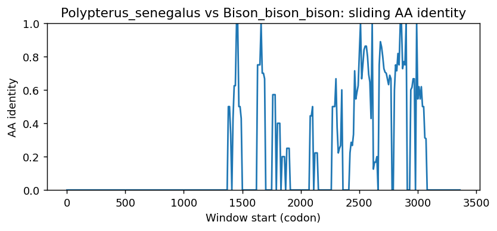
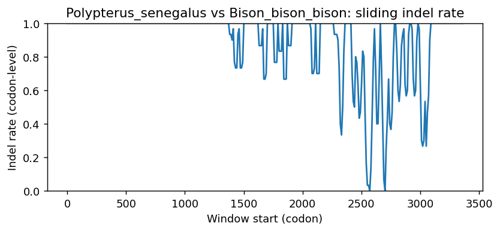
Polypterus_senegalus vs Erinaceus_europaeus
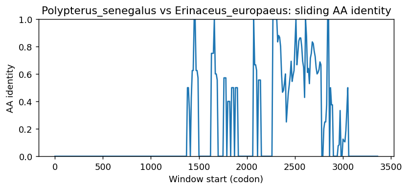
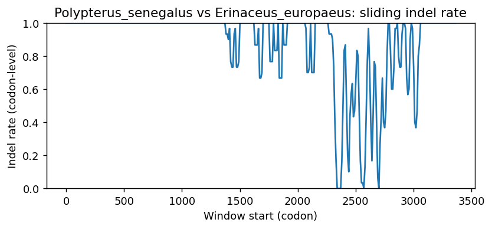
Polypterus_senegalus vs Myotis_lucifugus
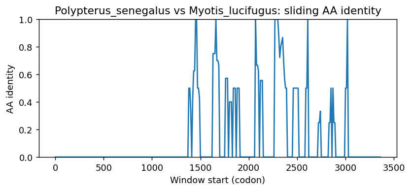
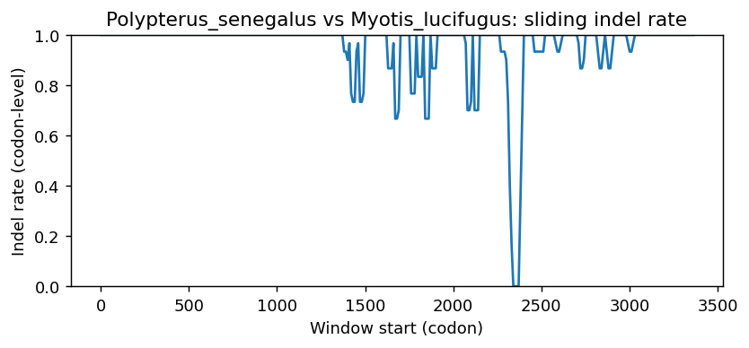
Polypterus_senegalus vs Conger_conger
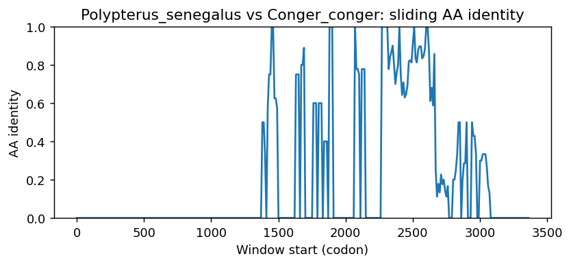
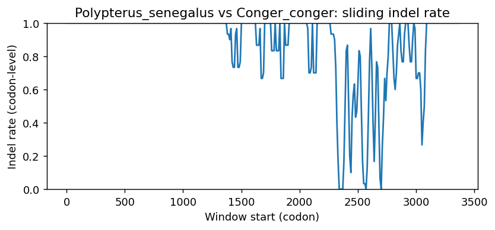
Polypterus_senegalus vs Falco_biarmicus
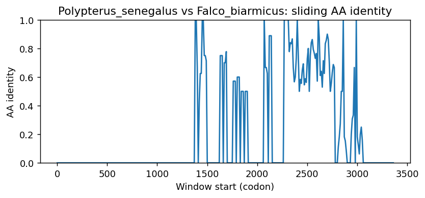
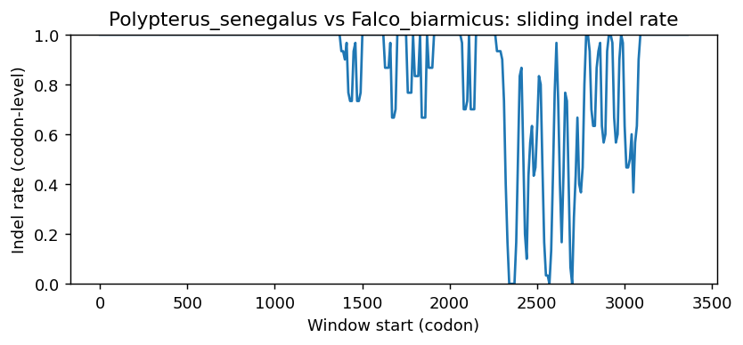
Polypterus_senegalus vs Falco_peregrinus
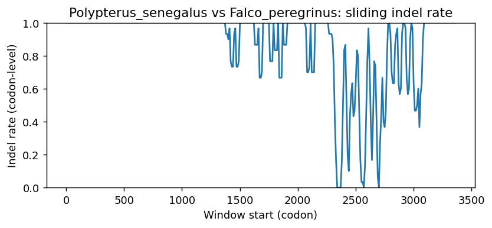
Methods (brief)
- CDS are translated (genetic code 1); proteins aligned by MAFFT when available, otherwise a progressive global aligner (BLOSUM62). Protein MSA is back-translated into a codon MSA.
- Pairwise metrics: AA/NT identities on aligned nongap positions; Ts/Tv; single-hit syn/nonsyn counts; gap events and largest contiguous gap cluster (codons); sliding-window AA identity and codon-level indel rate.
- Per-sequence diagnostics: GC content/skew, CpG density, AA low-complexity fraction via SEG-like entropy windows (win=12, H<2.2), and NT tandem repeats (homopolymers =5; di-nt =4 copies; tri-nt =3 copies).
- Correlations: Pearson/Spearman between AA identity and |GC difference|, mean AA LCR fraction, and mean NT repeat fraction across pairs.
- Risk classifier: combines identity, coverage, longest identical block, low-ID windows, max indel cluster, and up-ranks risk when mean LCR =0.25 or mean repeat =0.10 (soft-masking can remove seeds and reduce sensitivity).
Artifacts: pairwise_metrics.csv, per_sequence_composition.csv, correlations.csv, alignment_protein.faa, alignment_codon.fna.